AES Synthesizer System Design
Note: This project is maintained through Github and updated by the Cal Poly Audio Engineering Society. Check here for the latest version.
Table of Contents
0.0 The Goal (And What To Expect)
By the end of this series, you will have a synthesizer consisting of four modules: an oscillator, amplifier, filter, and envelope generator (ADSR).
The filter consists of a simple high- and low-pass stage, controllable via potentiometer knobs. This system applies the concepts of impedance and frequency-dependence, and we will have to make decisions as designers about sensitivity and filter range. The filter is not voltage-controlled, although you will be capable of adding this functionality by the end of this series, by applying the fundamentals we cover in other subsystems.
The oscillator, by contrast, is voltage-controlled. This means that the pitch can be set via an adjustable power supply, an Arduino, a set of mechanical switches, or any other voltage output we can control. It is capable of generating sawtooth waves from 20Hz - 3kHz, and you will have the knowledge to modify it to produce triangle and pulse-width signals, as well. In the process, you'll learn about operational amplifiers and comparators, relaxation oscillators, negative and positive feedback, hysteresis, transistor switches, as well as parasitics and other real-world implementation concerns.
The amplifier is also voltage-controlled, and will provide variable gain — in other words, volume. This subsystem introduces common-emitter amplifiers, differential pairs & amplifiers, and the transistor "linear" operation.
The envelope generator is a "triggered" circuit that uses resistor-capacitor (RC) networks to create predictable, controllable time-varying voltage signals, giving full ADSR control. By the time we get here, you'll have a lot of knowledge and practice at building circuits, so this is the most "flexible" design — you'll get to make a lot of decisions that will shape the subsystem and how your synth responds to input. This section teaches concepts of gates, ADSR, RC time constants, inverting and summing op-amps, and applies a lot of prior ideas.
In total, this series will familiarize you with content from the introductory Circuits series, as well as EE 306/307/308, and 409. The list of topics covered makes this sound like a project for 3rd- or 4th-year students in Electrical Engineering, but the whole point of this project is that you don't need those classes (yet!) to get started building synthesizers. Most people, with a bit of effort, can understand the fundamentals of how these systems work. In the process, you'll get to build something really special: your own DIY synth.
1.0 Fundamentals
A disclaimer: Don't treat this like a reference manual. This is a guide to get you to a goal. Everything in this text aims to be true, but in pursuit of a goal, we will embrace approximations, occasional half-truths, and plenty of omissions, whereas a reference source (such as a textbook) might not. Use it as a tool — as a supplement for your education — and it will serve you well.
1.1 Sound & Audio Fundamentals
What we perceive as "sound" is really a propogating compression (longitudinal) wave, traveling through a medium and causing alterations in pressure and displacement of air particles. Areas of high pressure undergo compression, while low pressure areas undergo rarefaction.
Sound waves are not visible, but we can represent areas of compression and rarefaction with transverse waves. Compressions correspond to "peaks", and rarefactions correspond to "troughs".
Pressure waves (top) can be visualized as transverse waves (bottom). [Source]
This turns out to be a natural way to represent audio. When a microphone records sound, pressure differences move a transducer back and forth, and the resulting oscillations are recorded as a transverse wave. Signal playback through a speaker follows this process in reverse: providing the speaker with oscillating high- and low- voltages causes the speaker diaphragm to move back and forth, pushing air and re-creating the compression waves of the original sound.
What we think of as "sound" may consist of one or multiple layered sounds, but typically features a recognizable pitch. The pitch is determined by the number of oscillations per second, called the frequency , and is measured in Hertz (abbreviated Hz).
We can also represent pitch by the period , which is the amount of time to complete one oscillation.
The range of human hearing spans 20Hz - 20kHz, corresponding to an oscillation period between 50μs - 50ms long. For reference, the human voice spans a fundamental frequency range of approximately 80Hz - 300Hz.
Basic Waveforms
The simplest sonic waveform is a sinusoid: a pure oscillation at a single frequency. As atoms are to matter, sinusoids are the most basic building block with which all other sounds can be created. Layered sinusoids are typically perceived as a single sound, albeit much more complex, and conversely, every sound can be represented as a summation of individual sinusoids, including common waveforms such as squares, triangles, and sawtooths.
This surprising fact is the product of an entire mathematical field called Fourier analysis, but to gain a quick intuition, we can examine a square wave.
Although sounds might be dominated by a single frequency, called the fundamental, they can contain many different pitches, called harmonics. Harmonics occur at integer multiples of the fundamental: for example, a sound which is perceived as 300Hz may have harmonics at 600Hz, 900Hz, 1200Hz, and so on. (The fundamental is the 1st harmonic.) The relative intensity of harmonics gives sounds their recognizable qualities, called timbre, which is what allows sound to be identified as, for example, a flute versus a violin.
Square waves sound "metallic" and "buzzy", like the retro arcade music of Tetris. This is because they contain many higher frequencies: ideal square waves are comprised of an infinite number of odd harmonics, in amplitudes which decrease by .

Square waves can be decomposed into an infinite sum of sinusoids. Harmonic number is listed in the blue column on the right, followed by the corresponding amplitude (decreasing by 1/n) in red. [Source]
Similarly, every other basic waveform used in synthesis is made up of harmonics with varying amplitudes. If we plot the harmonics, with harmonic numbers on the x-axis and amplitudes on the y-axis, we get a frequency spectrum plot showing their spectral content.
Frequency spectra for common waveforms. [Source]
As mentioned earlier, sinusoids have only one harmonic (the fundamental). While square waves have odd harmonics at amplitudes , sawtooth and traingle waves contain both even and odd harmonics. The plot above reflects that sawtooths have relative harmonic amplitudes of , while triangles have amplitudes following . In fact, if we filter these waveforms to remove all frequencies except the fundamental, we'll get a pure sinusoid at that frequency!
Electronics
Electronics is the discipline of using charge to achieve engineering goals by use of circuits.[1] What we call "electricity" is, more formally, the presence and movement of charge through conductive paths.
Electricity Fundamentals
We use several terms to quantify this movement of charge:
Charge is denoted by the letter .
- SI unit: Coulomb [C]
- 1 Coulomb = amount of charge on electrons.
Voltage is the amount of energy needed to move charge between two points.
- SI unit: Volt [V] = [J/C]
- Typical values: DIY synthesizer designs typically use +12V and -12V for power. Signals range between 0 - 5V. Wall outlets are 120V (USA) or 240V (Europe).
- Analogies: Water pressure, elevation. (Imagine trying to zipline from point A → B. What points are higher/lower?) If there is a path connecting two points, charge will always move from high → low.
- In particular, the "pressure" analogy is so convenient that we'll frequently discuss voltage as a difference in pressure. Keep in mind that this analogy is not litearlly true; voltage is a difference of energy, so it is more technically correct to discuss differences in potential. Thinking about pressure differences is, however, often more intuitive.
Current describes the flow rate of charge through a component. Denoted by letter .
- SI unit: Amperes (Amps) [A] = [C/s]
- Typical values: Microamp (μA) to milliamp (mA) range. Integer values of amperes typically melt breadboard components, set them on fire, and destroy your circuits.
- Analogies: Rate of flow. Imagine looking at a water pipe and describe how quickly the water moves: Gallons-per-minute? Liters-per-second? Replace the volume of water with "volume of charge", and Amps tell you, "How much charge moves through this point per second?"
Resistance measures how difficult it is to push charges through a particular path.
- SI unit: Ohms [Ω] = [V/A]
- Typical values: Large range, easily spanning 10Ω - 1 Megaohm (MΩ). Common resistor values between 1kΩ - 10kΩ.
- Analogies: Pipe width (water), friction (eg. zipline material). Narrow pipes are more difficult to push water through. Higher friction makes you go slower. This can be overcome with higher pressure, larger elevation differences, etc. In general, higher resistance makes flow (of anything) more difficult.
Circuit Elements
Elements in circuits are divided into two categories: passive elements and active elements. Active elements can add electrical energy to a system. Passive elements can only dissipate, absorb, or store electrical energy.
To introduce the most common passive elements:
Resistors are circuit elements that dissipate energy as heat. They resist the flow of current.Without resistors, electricity would flow from high to low voltage in nanoseconds, but resistors can limit current to a near-standstill.
Capacitors are made up of two parallel plates which accumulate charges to store energy as voltage across the capacitor's terminals. Capacitance [F, Farads] quantifies the voltage that results from a quantity of charge , according to the relationship [Coulomb/Farad]. A capacitor of 100uF, for example, needs 100 micro-Coulombs of charge to reach 1V. Typical capacitance values are in the pico- to micro-Farad range.
Inductors are loops of wire that store electrical energy in a magnetic field. Their inductance is measured in units of Henries [H]. Inductors are not used in this synth design.

Passive elements are represented by a corresponding schematic symbol.
We will introduce active elements as we progress, but there are some basics which are assumed and not introduced (much):
Diodes allow current to flow in a single direction, and oppose current flow in the opposite direction. When conducting at their rated current, diodes have a forward voltage drop across their terminals, typically ~ 0.7V; however, this voltage decreases as current slows. Diodes are useful for creating one-way paths to guide current.
Integrated circuits (ICs) describe a general class of small devices which contain complex circuits within. Common ICs are operational amplifiers (op-amps), comparators, voltage regulators, and many other components. We will introduce all of these as we go.

Schematics, Simulation, Build, and Test
Electrical circuits are documented in diagrams known as schematics, which use standardized symbols to represent different circuit elements. Lines indicate wire connections between elements. Unless otherwise stated, wires are assumed to have 0 resistance, and therefore all points connected by wires (called nodes) share the same voltage. Wire connections can also be implied by nodes with the same name. Elements which are connected end-to-end share a single node in common and are called series-connected, while elements which share two nodes are called parallel-connected. (Two parallel components are often denoted in shorthand with "//", eg. R1 // R2.)
Power is provided via sources, which are usually controllable and output either voltage or current. Nodes in the circuit which are explicitly 0V are considered "grounded" and are denoted by the triangular GND symbol.
Voltage and current sources provide power.
Most schematic design is done via programs such as Altium, Autodesk EAGLE, or KiCad. Circuit simulation is typically done with a SPICE program. There are many, but we will be using LTSpice and Falstad simulator, which are both free. Schematics do not indicate physical orientation or placement of parts in 3D space.
Translating schematics to a physical design is referred to as layout. Formal tools are not strictly necessary in order to implement a circuit;instead, electronic "breadboards" allow for rapid prototyping by providing a convenient structure to connect circuit elements together. Breadboards are not without drawbacks; in particular, breadboarding a circuit introduces electrical non-idealities that can alter a circuit's behavior; however, they are a convenient tool to quickly design and test with, and will form the basis of this project's synthesizer implementation.
(If you are completely new to breadboarding, click here for a detailed introduction.)
Because it is not possible to observe electrons as they flow through a circuit, we need tools to verify our breadboarded circuit implementations throughout the build process. This can be done via tools which measure voltage (oscilloscopes, voltmeters), current (ammeters), and resistance (ohmmeters). A basic digital multimeter (DMM) can provide this functionality and more. (See the Bill-of-Materials for a recommendation.) Generally speaking, measurement tools act in an ideal fashion to avoid altering a circuit's function.
Certain simulation software, such as Falstad, mimics these tools to provide additional information during simulation.
Series and Parallel Connections
Similar circuit components arranged in series or parallel combine by adding or scaling, depending on the component. [2] Resistors and inductors add in series and scale in parallel, whereas capacitors combine in an opposite way, adding in parallel and scaling in series.
Scaling of components follows a formula . When only two elements are involved, this formula reduces to . The following figure shows analytically-equivalent circuit element configurations, with formulas relating their values below.
These three resistor networks can be made equivalent by applying the parallel and series relationships below. The same is true for the three capacitor networks.
Applying series and parallel combinations, we have the following relationships:
These relationships result in important characteristic resistive network behavior that can be understood from an intuitive perspective. (Mathematical proof relies on Ohm's Law, covered in the next section.)
- Resistors in parallel allow more current. Just as traffic splits when given multiple roads, current splits to flow proportionally across parallel-connected resistors.
- Resistors in series cause less current flow, electrically equivalent to a larger resistor.
Ohm's Law
Voltage establishes pressure differences which push current along conductive paths. Paths with higher resistance (eg. narrower, higher friction) yield slower flow rates. Higher current can be achieved by decreasing path resistance, or by increasing the pressure difference (eg. pushing harder, raising the elevation of point A or lowering the elevation of point B).
Voltage, current, and resistance are linearly-related quantities which summarize these relationships, and are formalized as Ohm's Law:
Because voltages are typically discussed in reference to 0V (GND), the is typically omitted and the formula is often written as , but keep in mind voltage is a relative quantity relating a difference in electrical "pressure" between two points.
This relationship is demonstrated by the simplest schematic, consisting of a single voltage source, resistor, and GND. For a voltage source of V = 5V and R = 1kΩ, Ohm's Law tells us
Ohm's Law predicts that a 5V potential difference across 1kΩ of resistance causes current of 5mA. [Falstad]
Voltage Dividers
Intuitively, moving from high to low elevation requires passing through all elevations in-between. (You can't move from 100m to 0m above ground without passing through 50m at some point!) Applying voltage across series-connected resistors works similarly, with an intermediate voltage established at the common connecting node. This is the concept behind voltage division.

Two resistors form a voltage divider at their shared node.
This works because series-connected resistors are electrically equivalent to a single, larger resistor of value . This sets current across both resistors as
The voltage at the output is equivalent to the voltage across , yielding , which we can rewrite as
The scaling from input to output is entirely determined by the ratio of resistors. We can verify our understanding with a simulation. (Open the simulation to experiment with different resistor values.)
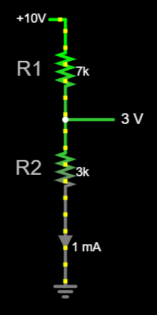A voltage divider gives output proportional to the ratio of two voltages. [Falstad]
DC & AC
So far, we've been discussing electricity in constant-voltage, constant-current circuits. The circuit conducts electricity, but nothing changes from moment to moment. Constant current (often produced by constant voltage) is referred to as Direct Current, or DC. If we allow our electrical sources to vary over time, this is called Alternating Current, or AC.
Power sources are usually DC, set to constant values such as ±12V to supply circuits. Signals such as audio waves are typically represented as AC, oscillating periodically with time. Just like sound waves, AC waves have a waveform (sine, square, saw), frequency (in Hertz), period (in seconds), and amplitude (Volts or Amps).
(Don't be fooled by the name of "alternating current." Voltages, as well as currents, can be AC or DC. After all, voltage is caused by current across some resistance — if the current changes, so will the voltage.)
2.0 The Synthesizer
2.0.3 Roadmap
A system build has a lot of steps, but it becomes a lot more manageable when broken into tasks. Here is a list of goals we'll need to tackle along the way, in order. This will let you track your progress as you get closer to a complete build.
System Overview
- [ ] Determine constraints
Speaker Output Buffer
- [ ] Schematic to breadboard implementation
Filter
- RC Low-Pass Filters
- [ ] RC low-pass step response
- [ ] Filtering waveforms
- [ ] Cutoff frequency
- RC High-Pass Filters
- Cascading LP & HP Filters
- [ ] Buffer the filters
- [ ] Breadboarding & test
Oscillator
- [ ] Triangle wave (resistive)
- [ ] Sawtooth wave (resistive)
- [ ] Add voltage control
- [ ] Input conditioning to accept 0-5V CV
- [ ] Basic thermal compensation
- [ ] Breadboarding & test
Amplifier
- Common-Emitter Amplifiers
- [ ] Simulate to understand CE operation
- [ ] Quantify gain & gm
- Differential Pairs
- [ ] Understand DC & AC theory of operation
- [ ] Implement adjustable gain
- Differential Amplifier
- [ ] Remove output offset
Envelope Generator
- [ ] Create AR envelope
- [ ] Separate attack & release
- [ ] Implement decay & sustain
- [ ] Fix output range
- [ ] Fix ADSR "tail"
- [ ] Fix DS decay time
Synth System Integration
- [ ] Connect everything
- [ ] Test, fix, test again
- [ ] Play your synth!
2.0.1 Bill of Materials (BOM)
2.0.2 System Overview
On any synthesizer, we want the core functionality to create a pitch, change its volume, and shape the sound (or "timbre"). This leads every synthesizer to be made up of at least three basic subsystems:
- Oscillator: Produces a tone at a given frequency
- Filter: Shapes the sound
- Amplifier: Provides gain (amplification) to change volume
One optional, yet common, additional feature found in most synths is an envelope generator, also called "ADSR". This allows for the generation of low-frequency, time-varying voltage signals which can be used as input to other subsystems.
- ADSR: Creates a time-varying voltage envelope to modulate other subsystems
Control of each subsystem is accomplished either by modifying the circuit directly, or by introducing an external CV "control voltage". Subsystems which can be controlled by CV are referred to as "voltage-controlled", meaning we can have voltage-controlled oscillators (VCOs), filters (VCFs), and amplifiers (VCAs).
The diagram below shows how all of these subsystems and more can potentially interact in a synthesizer. Notice the main signal path flows from oscillator → filter → amplifier, while the ADSR envelope is passed as an additional (optional) input to some of the subsystems.

Typical synthesizer subsystems and signal flow. [3]
The diagram also gives us some other information about a potential synthesizer, such as the existence of input control voltage, an offset, and a gate. The significance of these terms isn't extremely important right now, but will become clear as we examine each subsystem in detail. For now, simply knowing that these inputs and outputs exist is enough to inform our design process.
Finally, the diagram also indicates possibilities for more advanced synthesizers, including multiple oscillators (VCO2) and noise inputs. These add additional layers of sound, at the cost of additional complexity. These features are not included in this synthesizer build as they are not essential to sound synthesis; however, they are common modifications which enhance a synth's feature set, and are briefly introduced as future improvements.
Design Constraints
We need to build each subsystem separately, yet each one relies on others in order to function properly. This presents a challenge because it means that decisions we make in one part of the system design can affect other systems, causing design changes, adjustments, and compromises down the line.
One way to avoid this chaos is to outline some design constraints. For this project, we'll want to consider the following:
- Power levels (aka "rails")
- Signal levels
- Subsystem inputs & outputs
DIY synthesizer design can adhere to many arbitrary constraints; however, the popularity of synth gear has led to some conventions which we can use to inform our design. For example, the Eurorack "standard" (popularized by the company Doepfer) has led much of the synthesizer community to adopt a split-supply ±12V / GND for power; signals range between ±5V or 0-10V; envelopes typically adhere to 0-8V. [4]
For simplicity, our design will use the following constraints across the entire system:
- Power Rails: ±12V & GND
- Control Voltage (CV) Signals: 0-5V
- Output Signal: 0-5Vpp (peak-to-peak)
Power and signal levels typically have the most impact to the overall system, so with these constraints, we should be able to avoid any big design problems.
2.1 A Basic Speaker Output Buffer
The final output stage of our synth will be ready for a speaker to play, but throughout the design process, we'll want to listen to the signal that we have. Sometimes, this signal isn't safe for a speaker to play — for example, there may be a DC offset, which desktop speakers aren't built to handle. Other times, listening to the signal might disturb the circuit, altering its behavior and changing the sound significantly. We can solve both of these problems by building an audio output buffer, which isolates the signal and removes any unsafe DC offsets without much distortion.

We haven't explored filters, op-amps, or negative feedback yet, so don't expect to understand this circuit right away. (After we build an oscillator, though, you'll understand it completely.) For now, building the circuit and testing it using lab instruments will be challenging enough if it's your first circuit, so we'll use this as an opportunity to get familiar with building circuits, breadboarding, and troubleshooting.
Building the Speaker Buffer
Using the schematic above, try to draw up your own physical layout (eg. how it will look on a breadboard) before implementing the circuit on a breadboard. (You'll want to draw layouts by hand, by the way.) Notice that some things are missing from the schematic:
- power connections
- IC pinout
- capacitor type
- I/O connectors (How do you plug in an aux cable for speakers?)
Pinouts
The example breadboard layout below uses the LM358 and a generic TRS jack. Layouts are part-specific, so if you use different parts, you'll need to check the datasheets and adjust the pins to match!
Capacitor Type
If there is no signal offset, or if the offset is negative, the capacitor could be reverse-biased, meaning that a negative voltage is applied to the capacitor. The simulation above used a positive offset, but it is a possibility because we are building a general-purpose buffer — we don't know what signals we'll listen to! Our signals will frequently have a positive DC offset, but this isn't always the case.
Therefore, the capacitor used in this circuit must be non-polarized. Avoid using electrolytics — if one lead is longer than the other, this is a likely sign that you've got a polarized capacitor!
I/O Connector Jack
I recommend using the STX-3000 barrel jack connector from the BOM. (With the disclaimer that the pinout is not the same as in the layout below!)
However, how did we get to this particular connector? It turns out that, even if you know that you want to use a 3.5mm audio connector, component selection is not straightforward! Check out this AES info session on component selection for considerations on how to chose particular parts for your design.
Breadboard Layout
The layout below mimics that of a breadboard, with rails shown on either side and integrated circuits straddling the center divider.

Breadboard "layout" from a schematic. Most breadboard implementations don't require a formal schematic like this, but it can be helpful to make for more complex designs.
Notes:
- Signal_In is an AC signal (eg. sine wave) and can be created using a function generator.
- Frequency: [20 Hz, 10 kHz]
- Amplitude: 1Vpp
- Offset: [0V, 8V]
- Check the TRS jack datasheet to verify the ordering of connections. The STX-3000, for example, uses the middle pin as "Sleeve", with "Tip" and "Ring" on top & bottom.
- Always test op-amp buffers to verify that the output (Out1) has the same voltage / signal as the input (In1+).
- The left "+" rail of the breadboard is unused. You could choose to connect the Signal_In to it for convenience.
Check the output using an oscilloscope to verify it is not too large (1Vpp) and has its DC offset removed. Do this before connecting the speakers!
This is what your breadboarded circuit might look like:

Example breadboarded speaker buffer circuit. The red wire is for signal input, while the green 3.5mm aux cable is output to speakers (not shown).
You're ready to listen to signals!
2.2 The Filter
Given that synthesizer signal flow originates with the oscillator, it might seem that this is the best place to start. For our system design, though, we'll want to start with something simpler which lays the groundwork for more complex subsystems. The filter of a synthesizer represents an excellent starting point. As we build the filter, we will become familiar with electronics fundamentals and principles which will apply to future subsystem development, and even future system design.
With the exception of sine waves, most waveforms produced by synthesizers, such as triangle, square, and sawtooth waves, are rich in harmonic content — alter the harmonics, and the sound will change. (See sound fundamentals to see how this works.) Our oscillator will produce sawtooth waves, which have both even and odd harmonics.
Many alterations to a signal are possible, including adding harmonics, changing their relative intensities, shifting their frequencies, and more; however, the simplest effect we can apply to a basic waveform is that of subtractive synthesis — removing harmonic content to change a sound. Filtering is one technique to achieve subtractive manipulation, where the signal passes through a filter that removes some harmonics while allowing others to pass through. In this module, we will implement two basic filters, a high-pass and low-pass filter, by exploring a fundamental electrical circuit called an RC filter.
The RC Low-Pass Filter
The figure below shows the schematic for an RC high-pass and low-pass filter. Consisting of only a single resistor and capacitor, RC filters are extremely easy to implement. They can be understood farily quicly by developing some intuitions about the behavior of each component.
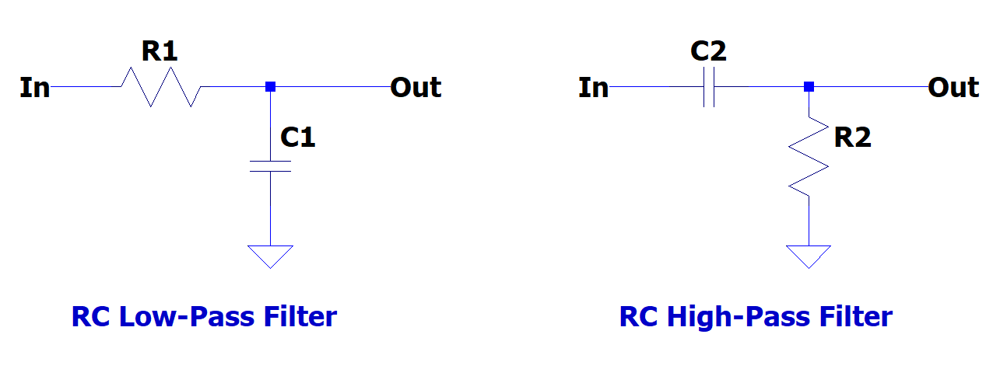High pass and low-pass RC filters.
Resistors
Resistors are relatively simple: they resist current flow. According to Ohm's Law, the current through a resistor is proportional to its resistance and the voltage across it. Applying the "water" analogy of electricity, suppose we have current flowing at some specific flow rate. (The exact units for the rate don't matter right now — 1 gallon/second, 1 liter/second, etc... Electricity uses Amperes, which measures charge-per-second (1A = 1 C/s). Regardless, current is simply a measurement that says, "How much stuff is rushing through this path per second?") If we make it more difficult for current to flow — for example, by making the pipe half as wide — we can still achieve this flow rate, but we'll have to push harder to get the same quantity of water per second. And if we don't push at all, then regardless of how wide or narrow the pipe is, water doesn't flow.
This models the relationship between voltage, current, and resistance. Voltage is akin to pressure, causing flow from areas of high pressure to those with lower pressure. As electricity flows, its rate is determined by the difference in pressure and by how much the path resists the flow of electricity. This is neatly captured by Ohm's Law as:
Capacitors
Capacitors are like tiny battery cells. As its symbol suggests, capacitors store charge on two parallel plates, which allows them to be charged to various voltages as charge is added or removed. Because current always flows "downhill" from higher voltage to lower voltage, charge will continue to accumulate on a capacitor until its voltage is equal to the charge source — a capacitor cannot be charged to a voltage higher than that which it is supplied.
Charging a capacitor
Technically, this is false. A capacitor can be charged to higher voltages using clever circuitry such as a charge pump or various power electronics. But we won't be using capacitors in any of these configurations, and this rule is rarely violated without intention.
Because the accumulation of charged particles is what gives a capacitor voltage, a capacitor cannot instantaneously change its voltage. (For example, a capacitor charged to 10V cannot immediately discharge to 0V — all the charges would need to leave the capacitor, and while this can happen very rapidly (in nanoseconds), it still requires some finite amount of time.) The relationship of capacitor charge to voltage also means that a capacitor cannot change its voltage without a conductive path for charges to travel along. A capacitor that is charged to 10V and removed from a circuit will retain ~10V across its terminals until a conductive pathway exists to remove them.
For this reason, large capacitors are extremely dangerous! Even if a system is disconnected from a power source, large capacitors may store charges that are simply waiting for a conductive path to discharge through.
RC Low-Pass Step Response
Let's look at how the low-pass filter responds to voltage.
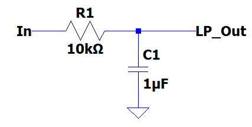RC low-pass filter. Input voltage is applied at the "In" node, and output is found at "LP_Out".
Before any input voltage is applied, the capacitor has zero charge on it and the input voltage is 0V. Because there is no "pressure" difference at any node in the circuit, charge does not flow in any direction. This represents the typical starting conditions for an RC circuit.
The figure below shows waveforms plotting input and output voltage levels when we apply a 1V signal to the circuit.

Input is shown on the top, with output (capacitor voltage) on the bottom.
When the input jumps to 1V (pressure increase), the capacitor initially remains at 0V. (Remember, capacitor voltage cannot change instantly, because its voltage reflects the amount of charge it carries — which takes time to enter and exit.) This causes a difference in pressure across the resistor, causing a current to flow. As charge flows onto the capacitor, its voltage begins to rise — sharply, at first, and then more slowly, until the capacitor and input voltages are equal.
When we then remove the 1V source, returning the input to 0V, the capacitor is still at 1V (and holds a charge in Coulombs corresponding to this voltage). With the pressure differential across the resistor now reversed, charge flows off of the capacitor and drains across the resistor — again, sharply at first, and then more slowly, until the capacitor reaches 0V. This response to a sudden, 1V "jump" in input, called a "step," is called the circuit's step response.
The resistor sets the rate of current flow: at extremely large resistances, charging will take a long time because the rate of charge entering the capacitor will be extremely low; by contrast, if there were no resistor, charge could rush from the input to the capacitor, charging it almost immediately! (This still takes time, but it would be almost imperceptibly quick.) With a resistor of , we can use Ohm's Law to calculate that when the capacitor reads 0V, the current is . Increasing or decreasing the resistor size, we can make the charging/discharging time longer or shorter.
Ohm's Law also explains why the rate of charge slows as the capacitor voltage nears 1V. While the beginning of the charging cycle has a difference of 1V across the resistor (the input is at 1V, while the capacitor is at 0V), as the capacitor charges, this difference is reduced. After 30ms, for example, the capacitor voltage is closer to 0.8V, establishing a potential difference of only 0.2V! Again, via Ohm's Law, . So charging rate naturally decreases as the capacitor voltage gets closer to the input voltage level. Of course, the same is true in reverse for capacitor discharging once the 1V input is removed.
The capacitor size also affects charging time, but unlike the resistor, it doesn't control the rate of current flow. Capacitance quantifies the relationship between how much voltage a capacitor reads for a given amount of charge, with larger capacitors requiring more charge to reach the same voltage. Therefore, even if the resistor moves charge onto a capacitor at the same rate, a large capacitor will take longer to read 1V because it has more "space" internally to hold charges. Getting a high "pressure" involves a high concentration of charges, and with larger plates, we simply need more charges to achieve this same concentration. In equations, this relationship is modelled by:
where = the amount of charge, in Coulombs. Notice that the ratio indicates that higher capacitance requires more charge to reach the same voltage.
Therefore, the capacitor's charging speed depends on the values of both circuit elements: the capacitor's capacitance, and the resistor's resistance. Interestingly, it does not depend on the voltage applied. While it seems like higher input voltages would take more time to be reached, the current will also be higher due to the larger potential difference. As a result, capacitor charging is only dependent on the values of and . The time constant is defined as , and as our simulation shows, 5 time constants is the amount of time required to fully charge or discharge an RC filter's output. The formulas describing this relationship are:
The simulation below shows the low-pass RC step response in full. Open the link to try the simulation on Falstad, and vary the values of R & C using the sliders at the right to see how the step response changes.

Visualizing the step response of an RC low-pass filter. [Click for an interactive Falstad simulation!]
Filtering A Square Wave
Remember that an ideal square wave is a sum of odd sinusoid harmonics.
The "low-pass" filter is so-called because it allows low frequencies to "pass through" to the output, blocking higher frequencies. This effect is demonstrated by passing a square wave through the low-pass filter: its upper harmonics are removed, and as it is reduced to its lowest harmonics, it begins to look more like the fundamental (a sinusoid).

Reducing a square's high frequencies makes it look more sinusoidal.
Square waves show the most obvious signs of filtering, but in general, we can imagine high-frequency content as constituting the "sharp" parts of a signal — hard edges and rapidly-changing voltages. Low-frequency content, by contrast, is smoother and slowly-changing. As more frequencies are filtered, sharp edges are smoothed, becoming more rounded until all frequency content is filtered and the signal magnitude decreases to 0.
Filter Cutoff Frequency
If the square wave's input frequency increases, the capacitor begins to "run out" of time to charge completely. At high frequencies, the capacitor begins charging, but before it can reach equilibrium with the 1V input, the input returns to 0V and the capacitor discharges. Imagine this process being taken to the extreme: instead of a square wave pulsing at 40-50 Hz, we might have a square wave as high as 5000 Hz. With each cycle taking only seconds, or 20us, the capacitor would barely charge or discharge at all. This illustrates how the filter could allow some frequencies through, but attenuates higher frequencies.

Increasing the square wave frequency gives the capacitor too little time to charge or discharge on each cycle.
In other words, high frequencies don't have enough time to change the output voltage much, attenuating their power.
Changing the charging time is possible through and (via ), so we can adjust which frequencies are noticeably attenuated by adjusting these values. The filter's "cutoff" frequency, where it reduces harmonic content to 70.7% (or more specifically, by -3dB or , is determined by:
It's difficult to see the cutoff frequency with a square wave because it contains many different frequencies, but switching to a sine wave input (which only has one frequency and no additional harmonics) shows it clearly. For our example circuit, = 1kΩ and = 1uF gives . A 1V peak-to-peak (Vpp) sine wave at this frequency is reduced to a voltage range of [146mV, 853mV], or 707mVpp.
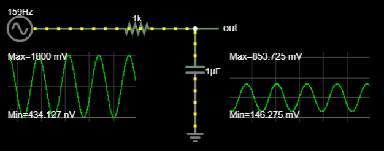This low-pass filter has a cutoff frequency of 159Hz, causing an output of 707mVpp. [Falstad]
While we might ideally like this cutoff to allow everything below 159Hz through and block everything above, this is impossible. (This is called a "brick-wall" or "ideal" filter.) Our filter is called a "1st-order" filter, meaning that after the -3dB cutoff, signal magnitude drops by -6dB for every doubling in pitch (an octave). This is acceptable for our purposes, although note that higher-order filters are possible and would be an excellent initial upgrade to pursue once this synth build is complete.

Brick-wall versus the performance of various n-th order filters. Higher orders produce results closer to the ideal. [Source]
The RC High-Pass Filter
Because of its similarity to the low-pass RC filter, we have most of the intuitions we need to understand the high-pass filter.

The following output shows the high-pass filter's response to a 1V square wave input. The key to understanding it is making sense of a series-connected capacitor. Recall that a capacitor cannot instantaneously change the voltage across its parallel plates. Therefore, if the voltage on one side of the capacitor changes, the other side of the capacitor must also change by an equal amount. In this way, a capacitor might be thought of as similar to a flexible membrane or wall — while charges cannot pass through it, any changes in pressure on one side are felt on the other. [5]
Let's walk through the step response to understand how this behavior creates the step response shown. The illustrations below show how charges near the capacitor's "output-side" plate can be understood throughout this process.
Before any input is connected, we assume the capacitor has 0V across it. All nodes in the circuit are at 0V, and nothing interesting is happening.
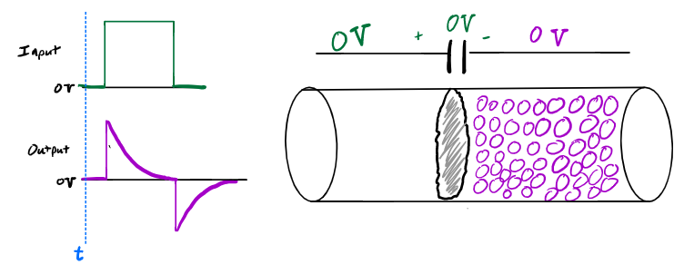Time is denoted by the vertical blue line — we are currently looking at the circuit before input is applied. Charges (purple) are drawn on the right side only for simplicity, but exist throughout.
At the moment we connect 1V at the input, the voltage at the capacitor's input jumps too. Think of this as the capacitor experiencing increased pressure at its input. In order for the capacitor to maintain 0V across it, it must also exert 1V "pressure" on everything to the right of it. This causes the initial "spike" seen at the output. The output voltage is now at higher pressure, establishing a 1V pressure difference across the resistor and causing current flow to ground.

The input rises to 1V, pushing on the capacitor membrane and transferring this pressure change to the charges on the other side. These charges begin to flow across the resistor to GND.
As current flows from the right-side capacitor plate through the resistor, the output begins to fall according to the RC time constant, until the right side of the capacitor reaches equilibrium at 0V. Importantly, with the input held at 1V while charges drain to ground, there is now (-1V) established across the capacitor.
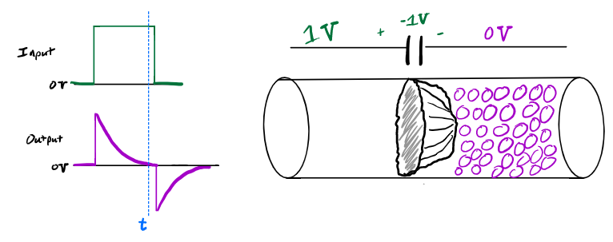As the input remains at 1V, charges on the right side of the capacitor flow toward lower pressure, across the resistor to ground. When equilibrium is reached, the output is at 0V and there is (-1)V across the capacitor.
Next, the input returns to 0V. This drops the capacitor's left-side voltage by 1V; however, because the capacitor has (-1V) across its plates, dropping the left side by 1V (from 1V to 0V) must also drop the right side by 1V (from 0V to -1V). Without the 1V "pressure" flexing the capacitor wall toward the right, a vacuum of (-1V) appears at the output. This causes the second, negative "spike" seen at the output, and a (-1V) differential across the resistor to ground.

The input falls to 0V and stops pushing the capacitor membrane. As the membrane returns to its starting position, this creates a gap of negative pressure (-1V) for charges to fill in.
With a -1V voltage established, current begins to flow up the resistor (from higher 0V pressure to lower -1V pressure) onto the capacitor's right plate. As charges accumulate, the right side of the capacitor rises according to the RC curve, until it returns to 0V. The circuit is returned to its initial state.

As the input remains at 0V, charges on the right side of the capacitor enter from ground through the resistor, filling in the empty space and returning the pressure to 0V at all nodes.
High-Pass Output
A high-pass filter's output typically looks sharper and more "jagged" than the original signal, as it allows only the highest frequency content through to the output. Applying this filter to a square wave, we get output that has more high-frequency characteristics as we increase the resistance.

Removing low-frequency content from a square wave with a high-pass filter. [Falstad]
Interestingly, simulation shows that the cutoff point (the frequency at which -3dB, or 70.7% amplitude occurs) for a high-pass filter has the same formula as a low-pass filter:
As a first-order filter, it also obeys the same attenuation factor, however in the opposite direction: +6db/octave. The only difference is the positive slope, which flips the direction that the filter attenuates frequencies from the cutoff point.

High-pass filter attenuation with different cutoff frequencies. [Source]
Combining Low-Pass and High-Pass Filters
Cascading filters allows us to selectively filter high frequencies, low frequencies, or both simultaneously. However, we cannot simply connect the input of one filter into the output of the other, as this will create a kind of "voltage" divider between the impedances of the two filters. It wouldn't sound bad, and would still provide decent filtering, but it would change the overall filter behavior and can easily be avoided. Fixing this involves learning how to isolate each circuit so that its behavior is unchanged by circuits that it connects to. This will help us now, but additionally, this ability is so useful that we'll see its application in every circuit we make from now on.
Op-Amp Buffering
Operational amplifiers are a general-purpose integrated circuit (IC). These devices have two inputs (the non-inverting In+, and the inverting input In-) and a single output (Out), and are represented in schematics by a triangle like so:

Op-amp schematic symbol with two inputs and one output. [Source]
The name "operational amplifier" (aka "op-amp") originates from a component that can do mathematical operations with amplification. Depending on its placement and configuration in the circuit, the operational amplifier can be made to perform a variety of computations, from basic arithmetic (eg. addition and subtraction) to advanced operations such as integration or differentiation. However, the output follows a simple formula which, in isolation, provides a principle of operation for us to understand:
In the ideal case, op-amps have an amplification ( ) that is infinite, but even practical op-amps have enormous internal gain ( ≈ ). Therefore, the opamp functions like so: take the difference of the two input voltages, multiply it by a really big number, and output that voltage.
You might imagine a few ways this could go:
| 5 | 3 | ||
| 3 | 5 | ||
| -5 | 3 | ||
| 5 | -3 | ||
| -5 | -3 |
However, we typically have only one signal to amplify, not two. This leaves one input free, and while we could connect this to 0V GND, this proves to be a very bad idea in practice. With such large internal gain, even the slightest millivolt-level noise would cause voltages in the hundreds of volts! Luckily, we can solve this problem with negative feedback.
We've used an op-amp previously in the speaker output buffer. There, we connected the non-inverting (+) input to our signal, and fed the output back to the inverting (-) input. This configuration forms negative feedback by causing the op-amp to continuously subtract its current output from the input signal. The result is a self-correcting negative feedback loop that minimizes error over time.
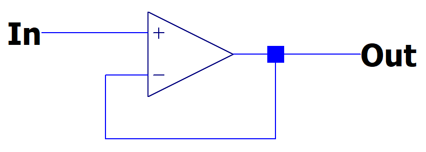The op-amp buffer configuration.
Here's how this works: Let's assume you are driving 50mph, and want to accelerate to 60mph. If we define "error" as the difference between what you want (desired) and what you have (reality), then
In this case, your error is +10mph — you need to increase your speed by 10mph to hit your target. As you increase your speed, the error minimizes as the difference between 60mph and your current speed shrinks to 0.
Systems in negative feedback always seek to minimize error. For the op-amp buffer, error becomes zero when the output is the same as the input. This forms a "buffer" which provides a 1:1 copy of our signal at the output.
This seems useless at first, because the output is the exact same as the input. However, op-amps are special because they obey two important rules:
- The input impedance is extremely high.
- The output impedance is extremely low.
A high input impedance means that, to any circuit connected to the op-amp's inputs, the op-amp appears similar to a massive resistor. Recall that resistance is a measure of opposition to current flow, and this means that an ideal op-amp draws 0 current. We can connect an op-amp to highly sensitive circuits, and because no current flows into its input terminals, the circuit won't be disturbed. In the ideal case, a circuit connected to an op-amp's input terminal doesn't even "see" the op-amp as being there at all.
A low output impedance means that, to any circuit connected to the op-amp's output, the op-amp appears to provide output without introducing any resistance of its own. Again, because resistance quantifies opposition to current, this means that an ideal op-amp does not oppose the current at its output at all. It simply provides the voltage level that it is supposed to provide at the output, without introducing any additional resistance in-between.
Buffering The Filter
To apply the op-amp buffer to our filter cascade, we simply place the buffer between the output of the first filter and the input of the second. The simulation below shows how this works, with the op-amp providing a copy from the first filter as input to the second. Because of the high input impedance, the op-amp doesn't affect the high-pass filter, and because of the low output impedance, it simply supplies the signal to the low-pass filter, without introducing any additional resistance to the filter's input.
Buffered HP/LP filter cascade. [Falstad]
Note that the sliders in the simulation above are renamed to "Cutoff" and mapped backwards, such that a high cutoff causes low resistance, and vice versa. This is necessary because, as users of the device, we want to consider the filter's behavior, and not the component values, when using it. Because cutoff frequency decreases with increased resistance, the cutoff slider should intuitively reflect that.
Perhaps confusingly, to allow all frequencies to pass through, the low-pass filter needs to be set to a high cutoff, while the high-pass filter needs to be set to a low cutoff. The image below shows how this looks graphically, as well as the Falstad slider positions which correspond to this setup. Conversely, blocking all frequencies can be accomplished by setting the low-pass cutoff low, and the high-pass cutoff high: when each filter subtracts as much frequency content as it can, this results in heavy signal attenuation at the output.
A high low-pass cutoff frequency + low high-pass cutoff frequency allows all frequency content through undisturbed. [Source(https://heroic.academy/how-to-mix-music-mixing-guide-part-3/)
Build Notes From The Filter
As you build this on the breadboard, be sure to use non-polarized capacitors only! Electrolytic capacitors are polarized, meaning they must have one side more positive than the other. If a polarized capacitor has a negative voltage across it, it acts like a short-circuit and can cause the capacitor to explode. Because we are sending audio signals through these filters, the input might go negative. For reference, I used ceramic capacitors.
Capacitor sizing is fixed, but using a potentiometer allows us to vary the cutoff frequency. We can replace the resistor in both the LP and HP filters with a potentiometer, giving us two variable cutoff frequencies like in the simulations. Note that potentiometers are 3-terminal devices; that's because they act like two resistors in series; the resistance value of a potentiometer is the total series resistance, from one outside terminal to the other outside terminal. Therefore, to use a potentiometer as a variable resistor, treat it as a 2-terminal resistor, using one of the "outside" terminals and the "middle" terminal. Leave the other one disconnected.
To use a potentiometer as a variable resistance, just connect across one of the internal resistances.
When using potentiometers, be careful to consider that they go to 0Ω. If you don't want that, you should install a resistor in series, which guarantees a lower-limit to resistance and sets a maximum current.
Also, recall that the simulations eventually "flipped" the sliders so that "high slider" → "low resistance" → "high cutoff." If your potentiometer doesn't "map" properly, simply flip the connections. It's basically a variable resistor, so the circuit will be unchanged, except the direction that you turn the dial will flip.
Beyond a particular frerquency, you might not hear a very noticeable effect from low-pass filtering. This leaves the question to you: how much are you willing to trade sensitivity for filter cutoff range? Large potentiometers will give you a wide range of cutoff frequencies, but also make it more difficult to control this via a fixed potentiometer knob. Conversely, smaller potentiometers and the placement of fixed series resistors will limit your cutoff range; however, this makes it easier to move the cutoff precisely. The sensitivity and cutoff range are yours to determine — use your eyes (oscilloscope) and ears to find the range that works for you.
You can use LTSpice to simulate filter frequency response. This is not something that Falstad is designed to handle well, because frequency response is not a time-domain simulation / analysis. Using LTSpice is beyond the scope of this guide, but this is what the final LT schematic should look like to do a .AC frequency simulation.
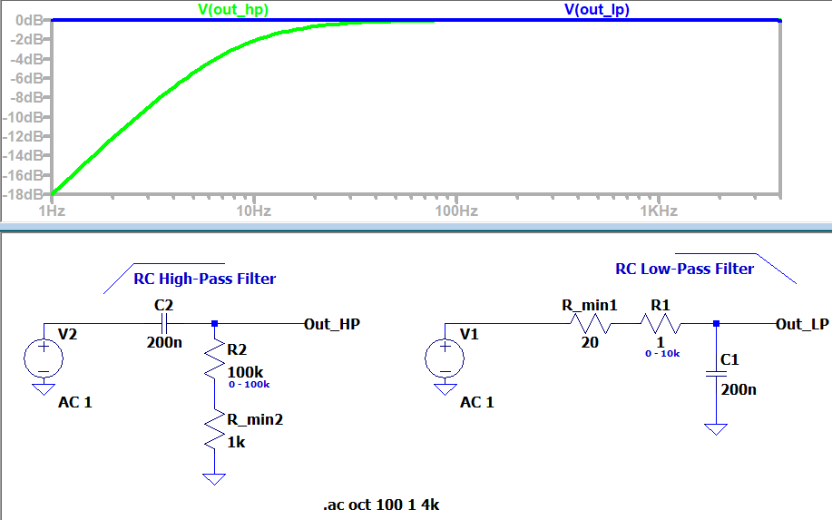LTSpice frequency sweep for LP & HP filters.
Use a function generator to create input waveforms for your filters. Many function generators will allow you to output a "triangle" waveform and alter the "symmetry" — pushing this value to the extreme will make the triangle into a sawtooth.
Finally, in testing, the high-pass filter adds some "spikiness" to the waveform, even when the cutoff was low. This is difficult to mitigate, because moving the cutoff close to 0Hz requires a massive resistance! If you have this problem, place the low-pass filter after the high-pass. It will remove any high-frequency "spikes" that result from the high-pass filter.
2.3 The Oscillator
The oscillator is the core of any synthesizer, generating periodic signals that we recognize as sound. There are many circuits which produce oscillations, but in general, oscillators can be categorized as either harmonic or relaxation.
| Harmonic | Relaxation | |
|---|---|---|
| Feedback Mechanism: | Amplification | Switching |
| Method: | Excites oscillations in a resonator (eg. crystal) | Repetitively charges/discharges an energy-storage device to a threshold |
| Output: | Sinusoidal | Non-linear (square / triangle / saw) |
| Example: |  |
 |
While many synthesizers can output sinusoidal signals, sinusoids lack harmonics and therefore provide limited options for shaping the sound using subtractive filters. Therefore, we will build a relaxation oscillator, which can produce a waveform that is rich in harmonics. Sawtooths are frequently preferred for synthesis because they contain both even and odd harmonics, giving additional flexibility when shaping signals through a filter.[3:1] (For a review of waveform harmonics, refer to Basic Waveforms.) A sawtooth core also provides flexibility for further development down the line, as it can be processed to produce other waveforms such as rectangular and triangle waves.
A quick Google search will provide many relaxation oscillator designs. We will use a relatively simple sawtooth core design sourced from Moritz Klein's YouTube channel. In order to understand how it works, we need to learn about comparators and hysteresis.
Comparators
Comparators can be thought of as a subset of the more general operational amplifier — in fact, comparators are essentially op-amps that are designed to excel in "comparison" applications.
We know from the filter section that, for some hypothetical op-amp inputs, we can expect the following outputs:
| 5 | 3 | |
| 3 | 5 | |
| -5 | 3 | |
| 5 | -3 | |
| -5 | -3 |
In reality, the op-amp will try to output the necessary voltage, but it is limited by the power supplies (the "rails"). In our case, our circuits run on ±12V, so instead of reaching voltages ~ , the opamp in each given case above outputs either a positive or negative 12V.
| 5 | 3 | +12V | |
| 3 | 5 | -12V | |
| -5 | 3 | -12V | |
| 5 | -3 | +12V | |
| -5 | -3 | -12V |
Notice that the output depends solely on the sign of . This setup is called a "comparator" topology, and it is this mode of operation that the comparator excels: the output is only "HIGH" or "LOW", and depends solely on a comparison of one input vs the other. Whereas op-amps are designed to precisely achieve any value within the power supply rails (eg. 3.532V), comparators are designed for speed — they cannot hit values between the rails, but are adept at switching from low-to-high and back extremely quickly. (Think of this like "input sensitivity" on a computer mouse or in a video game: set the sensitivity low, and you can achieve very precise mouse movements... but good luck turning 180° quickly! On the other hand, with high sensitivity, you can change orientation rapidly, but precise aim will be difficult.)
Look at the figure below, and check out this Falstad simulation of the comparator topology, to check your intuition about how this works.
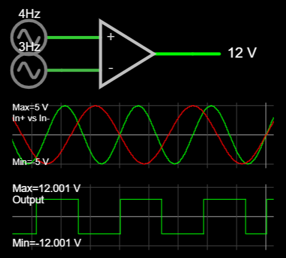Different inputs cause the opamp output to hit either rail, depending on [Falstad]
(Side-note: Falstad doesn't have a "comparator" part, and in fact, these simulations all use op-amps with modified output ranges of ±12V. However, because a comparator is a subset of operational amplifiers, you can sometimes use an op-amp to represent a comparator. In fact, some designers even use op-amp ICs in place of comparators! (As we'll eventually discover, though, this can be bad practice, and if your op-amp is only being used to compare (by swinging to the rails), a comparator is a better choice.)
Comparators With Reference
While comparator setups could be used to compare any two voltages, typical implementations set one of the inputs as a fixed value, to which the other input is compared. For example, we can check whether a signal is higher than 3V by setting the inverting (-) input to a "trip point" of 3V. This makes , such that the output swings "high" to the positive rail when .

Comparator with reference at 3V. Input sweeps [-5V,5V]. [Falstad]
Typically, the reference level doesn't simply exist — that is, we have ±12V rails, but we wouldn't want to get a new power supply every time we need to make a comparison! (Eg. We might want to compare against 1V, 3V, 5V, etc.) Instead, common practice is to use voltage dividers or zener diodes to set the comparator reference, while the other input is variable. This allows us to set any voltage within the rails as our reference.

Setting the reference to 3V via voltage dividers [Falstad]
Hysteretic Comparators
What if we wanted more than one trip point? That is, what if we wanted the comparator output to swing "high" at one voltage, but swing "low" at a different voltage? This is known as "hysteresis", and it is the key to creating a relaxation oscillator!
First, we need to develop our intuition about what a voltage divider does. Imagine a voltage divider as "dividing" the voltage between two points. Typically, this is a fixed voltage rail, such as our 12V VCC, and GND; the output exists between the two resistors and depends on their ratio. However, what if we moved this second side, so that it wasn't connected to GND? In that case, the output would still be set "between" the two resistors, but with the endpoints shifted. You can see this principle demonstrated in the three voltage dividers below, where (due to the equal resistances) the output voltage is always halfway between the endpoints.

Regardless of how the input voltages of the resistive divider shift, the output voltage is always between the two inputs.
In general, given two endpoints and :
This is important because we already have two possible outputs from our comparator: "high" & "low" (±12V). If we tie the comparator output to one end of the voltage divider, then the voltage divider will similarly shift its output. We can use this to set a changing reference value (or "trip" point) at the comparator's input.

This technique of using the output to influence one of the inputs is called "feedback". Unlike in amplifier configurations, hysteresis uses positive feedback, meaning that we must use the non-inverting (+) input as our reference.
Applying this to the comparator circuit, we arrive at a hysteretic comparator, with two different trip points. Just like the voltage divider above, notice that the non-inverting (+) input (red line) maintains a "divided" value between the comparator output and GND, creating a variable trip point. Open the simulation below to change the resistor ratio and see how the trip points move!
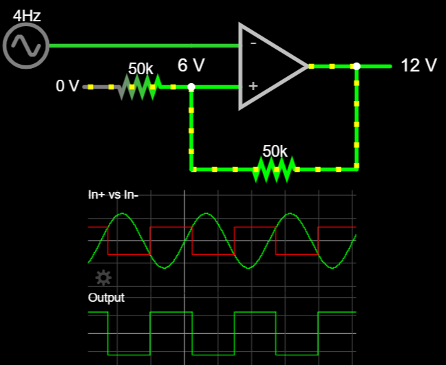Hysteretic comparator with trip points at ±6V. Output changes when the sinusoidal input crosses the threshold. This also changes the threshold value via positive feedback. [Falstad]
As you might guess, because the voltage divider is symmetric about 0V, changing the resistor values will shift where this trip point occurs on both the "high" and "low" sides. These thresholds form a "hysteretic window", which are the transition threshold values that the input must reach in order to "trip" the comparator output to the other extreme.
In addition to moving trip points nearer or further apart (expanding or collapsing the window), we can also bias the resistive divider about a point other than 0V to further alter the behavior.
This makes the complete formula describing our trip point thresholds:
where
- offset of reference input
- comparator output voltage (at low or high, respectively)
- input resistor (nearest the bias voltage)
- feedback resistor (connecting output to input)
For example, if we set the input bias to 6V instead of 0V, then (using the formula from before) our trip points will move to:

Hysteretic comparator with biased reference about 6V. [Falstad]
Finally, we can modify the comparator output by changing its power connections from ±12V to something else. Note that this changes appropriately, and is yet another factor that can be used to alter the trip points.
First Oscillator: The Triangle Core
It's time to make our first oscillator! We have most of the circuit already — in fact, this is the complete schematic for a basic triangle core.

The triangle oscillator core [Falstad]
Importantly, the above circuit uses +12V and 0V, and not -12V, for powering the comparator. This is important because it shifts the point of symmetry for the hysteretic window from 0V to 6V.
You should recognize the hysteretic comparator circuit from before. As noted in the previous section, the change in power to +12V/0V alters and affects the trip points. However, with the bias point set at 6V, the voltage divider in the positive feedback path is once again symmetric, so trip points are evenly spaced at +3V and +9V.
It may take a bit more work to process how the new circuitry creates an oscillator, but we already know everything we need to understand it.
Previously, we supplied a sine input at the inverting (-) terminal, which the comparator responded to. However, we could supply any "sweeping" input, as long as it eventually passes both trip points that the comparator needs to change its output. (Go back and run the simulation, changing the input source to a triangle or sawtooth, to see that this is the case.)
The comparator always outputs either "high" or "low" — in this case, +12V or 0V — so we can think of it as creating a rudimentary voltage supply. If we connect this output to an RC network, we'll get a capacitor that charges and discharges according to an RC time constant, τ, proportional to the values of R and C.

Connecting an RC network to the output of the comparator makes a "triangle" waveform, using the comparator as the supply. [Falstad]
This looks roughly the same as the input we've been using on the hysteretic comparator, so what if we used it (the capacitor voltage) to replace the voltage source? We would get a self-oscillating circuit!
This is the same triangle oscillator core from before. The resistor and capacitor form an RC network, creating an oscillation. [Falstad]
You'll find that in the feedback path sets the oscillation frequency, by limiting current flow to the capacitor.
The trip points also affect oscillation frequency by controlling how far the capacitor must charge/discharge to trip the comparator. That said, they should not be used to vary the oscillation frequency. Larger hysteretic windows cause the RC response to become more "exponential" as the trip points move closer to the comparator rails. For a better "triangle" shape that looks linear, we want to set the trip points closer together, so that they occupy a smaller fraction of the RC charging/discharging graph. For example, charging a capacitor from 5V to 7V has an imperceptible curve and will appear perfectly linear.

The entire RC curve is clearly not linear, but the segment from 5V to 7V is.
You can (and should) try to build this oscillator before moving on. Although we are using it as a stepping stone to a sawtooth oscillator, you could implement it as an oscillator to use in your final synth!
Despite the achievement of the triangle oscillator core, it does have some shortcomings. These don't make it useless, but it would limit the final synth design as our main oscillator.
Most notably, one of our goals for an oscillator should be to have voltage control, and the triangle oscillator makes this difficult because it both charges and discharges along the same resistor. Our path to voltage control will use transistors, and having a resistor with a single direction of current flow will make this upgrade possible.
In the next section, we'll turn the triangle core into a sawtooth oscillator.
The Sawtooth Core
A triangle wave is symmetric — it looks the same on the "charge" and "discharge" segments of one period. A sawtooth wave is asymmetric, but we can think about how we might alter a triangle wave to look like a saw: if that wave had an infinitely-fast charge time, and a normal triangle discharge time, the triangle would become a sawtooth!

A triangle wave with faster rise times becomes a sawtooth wave.
This is useful. If we can make the current flow into the capacitor (during charging) faster than the current flowing out of the capacitor (during discharge), then we can create asymmetries in the charging and discharging times. The easiest way to do this is with a diode.
Diodes allow current to flow solely in the direction they point toward, and (mostly) prevent current from flowing backward. This gives us the ability to specify unique paths for current flow during the charge and discharge phases. In particular, if we place a single diode with no resistors in its feedback path, we'll create a short-circuit that quickly charges the capacitor when the comparator output is high, yet acts like an "open" (disconnect) when the output is low. This means that the capacitor will still discharge through the 15kΩ resistor, and current will only follow the short-circuit path through the diode during charging.

Connecting a diode across the feedback path allows current to flow onto the capacitor quickly during charging, creating a sawtooth waveform. (Check out the sim to change the "sawtooth-ness" by adding resistance to the diode path.) [Falstad]
Because the discharge path is a resistor to 0V, we can modify the circuit slightly without changing its function much: let's connect the discharge resistor directly to GND instead of the comparator output.

Our first sawtooth core. [Falstad]
This isn't exactly the same circuit, because now the resistor is always connected to 0V (even during the charging phase). However, the magnitude of current through the diode is so large during charging, that the discharge current is negligible by comparison.
(Open the Falstad simulation to see that there are limits to this statement. For example, if the diode resistance gets "too large" relative to the discharge path, then the capacitor can't charge enough to hit the upper trip point.)
Barring some component differences, this is approaching the sawtooth core that we'll use for our synthesizer. Depending on component values, we'll be able to make sharper "saw" edges, and reach different frequency ranges. At present, this core can reach frequencies around 700 Hz, but experiment with the component values in the simulation, and you'll see that this core can reach frequencies as low as 10-20Hz, and potentially as high as several kHz.
Falstad scope scaling
Note: Right-click the plot in Falstad, and you can change the horizontal scale to zoom in and see higher frequencies more clearly. If you're at the right scale, it will be able to automatically calculate the frequency and display it on the scope window.
Build Notes from the Basic Saw Core
Observing this circuit's output (via scope probes) will alter the oscillation frequency. Usually, oscilloscopes don't affect the circuit that you're probing, but because of the extremely high resistance, they might. Oscilloscope probes typically have 1 Megaohm (1M) impedances, which are around the same value as our discharge potentiometer. If you connect the probes to the potentiometer at 1MΩ, you'll effectively provide two parallel resistances: 1M // 1M → 500kΩ equivalent resistance! This will double the oscillation frequency. In fact, you can even pull the discharge resistor entirely, and some scope probes will lower the parallel resistance enough to continue oscillation!
Capacitor sizing will affect the oscillation frequency: a smaller capacitor holds less charge, despite oscillating at the same voltages as a larger one, and therefore produces a higher frequency. (You can also think of this in terms of RC time constants!) For the largest range, you'll want to use the largest potentiometer you've got. Still, 1-2 Megaohms is the biggest value you'll probably have, and this places limits on capacitor sizes which will work for this circuit. Use the oscilloscope functions to measure the frequency, and try different capacitances to determine whiich one gives the "best" frequency range. (Different values may give multiple valid frequency ranges, each with their own tradeoffs. Do you want to be able to output super-low frequencies like 20-30Hz, or really high frequencies in the 3-4kHz range? It is difficult to do both.)
There's also a trade-off with capacitor sizing to be found in the quality of the output sawtooth. To complete each oscillation, an ideal sawtooth moves from low to high immediately. This is impossible in reality, but we want the transition to be as fast as possible. Using a small capacitance, the time it takes to charge the capacitor (called the "rise" time, for an oscillating signal) is in the nanosecond range. If we increase capacitance too much, though, then the rise time will become noticeably large, and the "saw" will look more like a triangle.
Additionally, the oscillator is tricky to make because, beyond the basics, it matters what components you use. Your breadboard and components will all introduce unwanted interferences (called parasitics), and while most times, this is negligible, it has a noticeable effect on the VCO performance. For example, diodes have their own capacitance, which charges when they conduct. When the diode turns off, its parasitic capacitance will compete with your actual capacitor, pulling charge off of it! This results in a "spiked" waveform, which worsens as diode capacitance increases. If it's too large, it will completely kill the oscillation!
Diode parasitics cause a "spiked" sawtooth waveform. The diode pulls charge from the capacitor when it turns off. [Falstad]
Schottky diodes seem to have higher diode capacitances, and you'll have to check the datasheet to find out how much parasitic capacitance a particular diode will have. The 1N4148 in the BOM is recommended, as it minimizes parasitics a lot; using something like a 1N4007 will make it noticeably bad. Also note that you can increase the capacitor value to make it "stronger" than the diode parasitic capacitance, but this is only good up to a point.
Adding Voltage Control
We want the ability to produce sound at a variable frequency. While the term "variable" implies that something is changing, it's not obvious what that ought to be. Right now, we can change the frequency of the sawtooth core by modifying the resistance via a potentiometer, but luckily, this isn't our only option. Resistive control is somewhat limiting — after all, a potentiometer requires mechanical input, turning a knob or a screw with your fingers. Depending on the implementation, it would be extremely difficult, if not impossible, to rapidly change the pitch as you might with an instrument (eg. from 440Hz to 880Hz). Further, we might want to connect the oscillator to a keyboard or microcontroller, tuning it indirectly rather than with our hands.
Both of these problems can be solved by making our oscillator voltage-controlled. However, doing this requires the introduction of a new device: the bipolar junction transistor, or BJT.
The Bipolar Junction Transistor
A Disclaimer
Transistor theory has many complexities which threaten to make the topic overwhelming and incomprehensible to newcomers. Reasonable treatment of such topics spans multiple courses and entire textbooks. Luckily, we can sidestep much of the complexity by focusing on abstractions that are "true enough" to establish functional intuitions and understanding. For all the details, check out EE courses such as EE 306/7/8. In the interest of moving quickly, we will embrace some degree of approximation that will serve our purposes.
BJT Anatomy & Behavior
BJTs come in two "flavors", called npn and pnp. For now, we'll consider the npn. Looking at the schematic symbol below, you'll see that BJTs have three terminals: a collector, base, and emitter. Current flows from top to bottom, collector to emitter — notice that the "arrow" is always on the emitter, and it points in the direction of current flow.

The base is not part of this flow path — that is, current does not flow from the collector into the base. Instead, think of the base as a "gatekeeper" controlling a valve to determine how much current can flow from collector to emitter. When the base is at a low voltage (relative to the emitter), it closes the valve and no current can flow; when the base has high voltage (again, relative to the emitter), the floodgates are opened and current can flow unimpeded! In this sense, a transistor is similar to a variable resistor (potentiometer), and we might think of the base as analagous to "setting" the resistance.

A transistor and resistor, both conducting 10mA. BJT current flow depends on the base voltage, which sets current similar to a resistor value. [Falstad]
Importantly, BJTs determine current flow similar to resistors, but they do not operate via Ohm's law. For example, the resistor above has a current of 10mA because 10mA. Setting the supply voltage to 20V would double the current to 20mA, while cutting it in half would similarly change the current to 5mA. The BJT would not respond in the same way.
While Ohm's law places current as proportional to voltage across a resistor, a BJT doesn't respond to voltage applied across collector to emitter, or . Instead, the formula governing current flow from collector to emitter relies on the relative voltage between base and emitter, . At = 0V, the emitter-collector channel is completely closed, and most engineers consider the transistor to be fully conducting when . (Some texts and engineers use 0.7V as a maximum, which is certainly the maximum voltage you'll want to apply across the base-emitter terminals!)
More specifically, when voltage exists to support it, current approximately[6] follows:
where
- = saturation current, on Falstad SPICE (femto = )
- = thermal voltage = 25mV at 20°C
We won't be using this formula explicitly, but one key takeaway is that increases to of +18mV result in doubling of the current through .

Increasing the base-emitter voltage by +18mV causes the collector current to double.
Configurations
In general, we will always setup BJT circuits in one of two configurations, like in the figure below:
- "Forward-active" mode:
- "Cutoff" mode:
This means we'll avoid any configuration which sets the collector voltage below either the base or emitter — this mode, called "saturation", has different rules and won't be very useful to us.

We'll always aim to use transistors in "cutoff" or "forward active" modes. Notice that the collector is always the highest voltage; the base or emitter is at the lowest voltage, setting forward-active or cutoff modes.
Base Current & Beta
If you hovered over a BJT in any of the simulations, you might notice that there is an (almost imperceptible) current going into the base of the transistors! This current is so small (often nano- or micro-amperes) that we frequently disregard it — for example, we've been talking about the emitter and collector currents being equal , when in reality, .
Despite its small size, this current is actually very useful for BJT circuit design, because in the forward-active mode, base and collector currents are related by a device parameter called "beta" (β, or in datasheets, hFE). While BJTs are voltage-controlled (by ), beta gives us a way to consider how the current is controlled by thinking about base current instead of voltage:
Typical β values are around 100, but vary by device and even between individual transistors! However, thinking about β=100 will work well for us, on average. You can see the relationship of β acting on the BJT in the figure below, where and also in the simulation below as you change the base voltage.
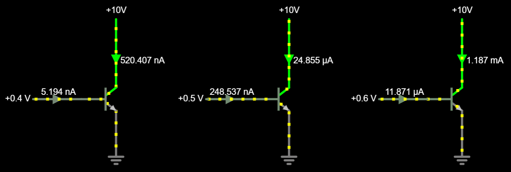β relates the current at the base to the current through the emitter and collector. Typical values for β=100; for example, collector current of 1.187mA results when base current is 11.87μA. [Falstad]
A Voltage Controlled Saw Core
Knowing how a BJT controls current allows us to replace the resistor in the capacitor discharge path with an npn BJT. All we need to do is find the base-emitter voltages which yield the same currents that the resistors provided for oscillation. This will depend on the capacitor size and comparator threshold values you use — for this setup using a 100nF capacitor [Falstad], the resistor sees currents between 10uA and 400uA for frequencies between 28Hz and 1.2kHz (Using R = [15kΩ, 700kΩ]).
Using the BJT formula from earlier, we can calculate that ≈ 10uA, so a 475mV is around where we'll find a 20Hz oscillation. It's only worthwhile to use this formula as a starting point: component variations mean that calculating an exact value will be useless for a physical implementation of the circuit, but it's important to have an estimate so we don't fry the circuit accidentally.

Replacing the discharge resistor with an npn BJT provides voltage control. Changing base voltage changes frequency. [Falstad]
Don't try building this just yet — it's too easy to fry the BJT accidentally. We'll fix that in a moment, but first, let's focus on a few observations to see what else we can learn from this circuit.
- Recall that the resistive sawtooth core had displayed exponential curvature on the decay phase. By comparison, even with a wide hysteretic window and a slow oscillation frequency, the BJT oscillator has a perfectly linear sawtooth decay. This is because the BJT sets a constant current draw (determined by ), whereas the resistor forms an RC network and forms the corresponding characteristic discharge curve. (Why? Because as the voltage on the capacitor drops, this reduces the "pressure" pushing current through the resistor.) 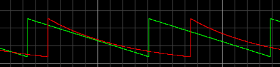
- We know from the BJT equation that an 18mV increase to doubles the collector current. This, in turn, halves the time that the capacitor takes to reach the lower trip point, and therefore doubles the frequency. This gives us a relationship between voltage and frequency: every 18mV should give a 1-octave jump in pitch! (Pitch perception is exponential). Try it out in the simulator.
Current-Limiting The Input
We're almost ready to implement voltage-control on the breadboard — the final step is to limit the current and avoid a short-circuit. If we accidentally connect 1V to the input at the base, the BJT has no current-limiting capability, opens completely, and creates a dangerous short-circuit! (The figure below shows 6kA flowing through the circuit, but in reality, the component would burn out or catch fire.) If we instead place a 10kΩ resistor before the base, we'll avoid this disaster.
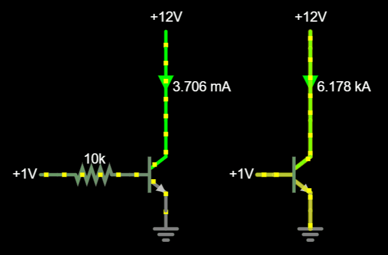A current-limiting resistor prevents a short-circuit through the base-emitter junction to GND.
This presents a problem, though: If we place a resistor at the base, then how will we reliably set the base voltage? (For example, in the figure above, how do we know the current produced by 1V input to the circuit on the left?)
In general, if we know a BJT is conducting (in the forward-active mode of operation — recall: the base is positive and the collector has the highest voltage), then we can assume a 0.6V drop across . This makes the voltage across the resistor
and the base current is therefore
Scaling from to is accomplished via β, which assuming β=100,
This is confirmed in the simulation below. (The biggest discrepancies come from the fact that the voltage is somewhere between 0.6 - 0.7V — pick your favorite value for calculations.)

Protecting the BJT from a short-circuit with an input resistor. [Falstad]
The good thing about this resistor is that it protects from short-circuits, but also has little effect on the BJT when we apply the intended voltage inputs. The BJT will try to maintain the typical (~0.6V) "forward active" drop. For example, if we apply only 500mV, then in a forward-active configuration, most of the 500mV must drop across . This leaves the resistor with barely any current to drop voltage across itself. We can use β to find the base current in such situations.
So at our typical input voltage of ~500mV, the resistor will only drop ~2mV before hitting the base of the BJT.
A current-limited npn VCO. [Falstad]
Build Notes From The VCO
Again, the components matter — moreso, in fact, with the voltage-controlled oscillator. A BJT allows us to get precise capacitor discharge rates due to the constant current (versus an RC network, which is exponential). However, because we are getting to the point where we'd want to set particular frequencies predictably, we don't want anything else pulling current from the capacitor.
All diodes are imperfect, and will conduct a small current in the "wrong" direction when they are "off". If you use a high-leakage diode (check the "reverse current" in the datasheet), the capacitor might noticeably discharge via the diode instead of the transistor. To test this out, double-click on the diode in the Falstad simulation from before, and you'll be able to choose from a few different common diodes. As you change diodes, notice the current in the bottom-right corner of the screen.
The 1N4148 has ~ 4nA reverse current; changing the value to the 1N5711 gives 315nA of reverse current! [Falstad]
Significance of reverse current
Technically, this should be negligible. Not because the current is small (relative to the capacitor and the low frequencies, it may not be), but because the BJT is constantly pulling current to GND — why would it matter if the diode does, too? We'll just adjust for this in setting the BJT base voltage bounds. In any case, I'm not fully convinced it doesn't matter, so I'm including it here. It's interesting, at the least, and we're already using the 1N4148, so this doesn't change anything we're doing.
The circuit will only work within a small input range of ~100mV or so, and it will vary based on your particular BJT, ambient temperature, etc. So the 450mV - 550mV recommendation that we've been going by is only a ballpark estimate. For sure, you know that 0.7V is too much, so no need to raise the base voltage that high. But finding the input range can be tricky.
Here's a tip to help: Think about the fact that the BJT's role is to discharge the capacitor, meaning that if the base voltage is too low, the cap will be "stuck" at a high voltage. If the voltage on the cap (output) suddenly drops lower, you probably passed the input range. Once you find it, write down the voltages and the frequencies at which they result! We're going to need these values later, and even though they may shift slightly from moment to moment, it will be extremely helpful to know them for input conditioning and temperature compensation.
VCO Input Conditioning: Accepting 0-5V
While the VCO works with a variable power supply, it's not ready to integrate with the rest of a system until it can accept a standard range of voltages. (We specified 0-5V as our constraint for control voltage (CV) signals.) Right now, the oscillator only works within a narrow range ~ [450mV, 550mV]. An input of 5V would cause the BJT to drain the capacitor faster than it can charge; conversely, an input of 0V would cause the capacitor to never discharge at all. To accept CV, we need to convert a 0-5V input into 450-550mV.
Mathematically speaking, converting an input in range x=[0, 5] to y=[0.450, 0.550] is a linear conversion satisfied by the line
Therefore, we can achieve this same conversion in our circuit by:
- Scaling [0V, 5V] by a factor of 0.02x to span [0V, 100mV]
- Adding an offset of 450mV
One way to do this is via a passive mixer, which outputs a weighted average of multiple inputs. Our first input will be the full CV input (0-5 V), while our second input will be a constant DC voltage offset. Surprisingly, a voltage divider provides this functionality.
Passive Mixing
Typically, a voltage divider is considered with a single input, and the other end is connected to 0V (GND). This simplifies the equation to the familiar
where the output voltage is proportional to the ratio of the two resistors.
Single-input voltage divider.
However, while a voltage divider is typically designed to drop voltage from some input voltage to GND, in theory all that is required for its operation is a difference in voltages. Similar to how ziplining from 100m to 0m works pretty much the same as from 500m to 400m, or 1500m to 1400m, there's no reason that the bottom resistor must be connected to GND. The output is still proportionally placed, only relative to the new voltages (elevations) at either endpoint.
Moving the bottom voltage shifts output velocity proportionally. [Falstad]
This changes the voltage divider equation somewhat, and reveals that the previous formulation has been a simplification which only applies when one input is grounded. The full equation, which we saw when introducing the hysteretic comparator, is
When resistances are equal, the output voltage of a two-input voltage divider is simply the average of the two inputs. Changing the ratio of the resistors (by allowing R1 ≠ R2) shifts the midpoint "away" from the larger resistance, weighting one input more heavily than the other. This forms the principle behind passive mixing. Importantly, each ratio and forms a simple percentage (0-100%) which scales each voltage ( or ), and these percentages must add up to 100%. If contributes by 25% to the output voltage, must contribute the remaining 75%.
A voltage divider is a 2-input passive mixer. We can change the input voltages or the resistor ratios, or both. In all cases, each output is a weighted average of the two input voltages. [Falstad]
We can applying passive mixing to our circuit to "scale and shift" the CV input.

Recall that our desired output range (450mV - 550mV) is 0.02x, or , of our input (0-5 V). This means that our other input, which we'll call the "bias", must contribute 98% of its value to the output. Therefore:
This implies that the resistors must be sized to maintain this ratio: We'll choose and .
Although we don't know the bias voltage yet, we know the output that we want when = 0V or 5V. We can choose to solve for voltage in either:
Using LTSpice allows us to confirm this is true. Setting the CV input to range between [0V, 5V] for 0-50ms, we can observe the output makes a straight line from 450mV - 550mV.

Output voltage for an input voltage sweep of CV=[0V, 5V] over 50ms. Bias voltage is fixed at 0.4592V.
LTSpice vs Falstad
Falstad simulator is a powerful and convenient tool to use for a lot of design work. However, especially when you need to do an analysis that doesn't involve time as a parameter — for example, we want to see the input/output relationship between two voltages — LTSpice is a clear winner.
We don't want to waste a power supply just to provide a specific bias voltage (eg. 459mV). Instead, we can applying another voltage divider between the +12V rail and GND to fine-tune our offset. Adding this to the oscillator involves simply buffering the output before passing it to the BJT base. After making these changes, we have successfully ensured that any valid CV input (0-5V) will work with our oscillator. If we implement the resistances and with potentiometers, we'll have an oscillator with adjustable offset (in theory, 450mV) and scaling (in theory, 100mV).
The oscillator accepts 0-5V CV input. [Falstad]
Temperature Compensation
The npn BJT which controls the oscillator frequency is highly temperature-dependent: if you put your finger on it, the frequency will rapidly increase as the BJT heats up. In fact, you don't even need to touch it — simply breathe hot air onto the BJT, and the oscillator will fall out of tune!
Recall that the Ebers-Moll equation for a forward-active BJT gives:
The thermal voltage is (as the name suggests) a quantity that changes with temperature: . We might, therefore, expect to see that increasing temperature causes a decreasing current for a given . But surprisingly, the opposite occurs. This is because varies with temperature cubed, causing current to increase with temperature.
Another way to think about this relationship is: If temperature increases at a fixed voltage cause current to go up, then if we want current to stay the same, voltage must decrease. Via simulation at different temperatures, we can discover that a fixed current provides: [7]
This is called the temperature coefficient, and it describes how electronics vary their voltages in response to temperature changes.
Correcting for this is difficult, and many more complex designs exist which attempt to mitigate the effects of temperature on transistor circuits. A much more intuitive temperature compensation [8] will work for our purposes, though, which we will implement here.
Introducing PNP NPN Temperature Compensation
We know that our oscillator frequency increases with temperature. This implies that the capacitor must drain more quickly on each cycle, meaning that BJT collector current must be increasing with temperature. This is consistent with what we just learned about BJTs and temperature-dependence: as temperature rises and remains constant, current increases via .
The BJT temperature coefficient tells us that constant current results from decreasing by -1.82mV /°C (≈ -2mV /°C). By this logic, if we could lower the npn's base voltage proportionally as temperature increased, this would keep the VCO in tune. This can be achieved with a pnp BJT.
Think of the pnp BJT as the mirror image of an npn. The theory of operation is the same, but now the emitter-base voltage sets the current. (This is different from base-emitter voltage — the sign flips.) Additionally, instead of the collector being the highest voltage, it's now the lowest; instead of the emitter being the lowest voltage, it's the highest.
The npn and pnp BJTs are "mirrored" in their connections, but work the same: the magnitude of the base-emitter / emitter-base voltages set the current.
The good news is that, although npn and pnp BJTs are connected in opposite ways, both "flavors" of transistor increase their current with temperature. This gives us a way to cascade them which counteracts their temperature dependence.
PNP-NPN Cascade
We'll begin with an example before applying this to the oscillator.
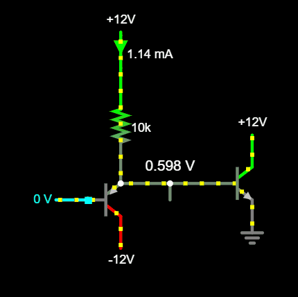Cascading a pnp and npn for temperature compensation. [Falstad]
Let's assume forward-active mode; then both BJTs will try to maintain a ~0.6V drop across their base-emitter junction; therefore, . (We'll justify this later.)
An input of 0V at the pnp base, then, causes its emitter to be 0.6V. This places the npn base at 0.6V also, and therefore its emitter is at 0V (GND). This creates a symmetric voltage "rise" (from pnp base to emitter) and "fall" (from npn emitter to base).
Notice how the 10kΩ resistor effectively "sets" current: we just reasoned that its bottom node is at ~ 0.6V, so there must be through it. Even if the PNP base-emitter voltage varies a lot (for BJTs, "a lot" is ~ ±100mV), a 1mA current is basically guaranteed through the PNP. (Remember that base current is a tiny fraction of collector current, so the NPN base draws a negligible amount relative to the PNP's collector.) Additionally, we've tied the PNP collector to -12V, ensuring that the transistor will remain out of saturation. This is what guaranteed us our earlier assumption of forward-active mode.
We can then allow the PNP base voltage to fall slightly: for example, to -100mV. Because the transistor is forced to allow 1mA of current (due to the resistor at the emitter), it must maintain the corresponding of 0.6V. This sets the NPN base voltage to (-0.1V + 0.6V) = 0.5V. With the NPN emitter fixed at 0V, its lowers, causing less current to flow. This operation continues down to the lowest range that we might reasonably want for the PNP base voltage, around -0.6V; this places the NPN base at 0V, and therefore the NPN enters cutoff.
But how does this mitigate temperature effects??
Recall that as the NPN heats up, it conducts more current and the VCO frequency increases.
We've set the PNP base voltage, so there's no way for that to change with temperature. Similar logic holds for the NPN emitter's GND connection. We noted earlier how the resistor sets a roughly constant current, which the PNP accomodates with an appropriate . But the "appropriate" is going to be different depending on temperature! If we assume it's 600mV at room temperature (20°C), then with constant current, at 21°C it must be ~ 598mV. As the PNP heats up, its must shrink, meaning its emitter voltage must fall. Because PNP emitter and NPN base are tied, this lowers the NPN's , decreasing its current back to its original value.
This action isn't perfect — in particular, the NPN "pulls up" more than the PNP can "pull down". Breathe on both, and the current will increase slightly (due to the NPN) before the PNP is strong enough to counteract it. But it's sufficient to keep the circuit decently in-tune enough for our purposes.
Adding the PNP-NPN Cascade
For our VCO to work, the NPN base voltage must be between our theoretical ~[450mV, 550mV] oscillation range. We can achieve this by re-doing our CV input biasing to place the PNP base voltage between [-0.250V, -0.150V].
Temperature-compensated VCO circuit, annotated with voltages at each node. [Falstad]
Oscillator Build Notes
Remember that 450-550mV input is not guaranteed to be the right range for oscillation, simply due to component variations. It will change a lot based on temperature as well. Therefore, we need potentiometers for this circuit to work optimally. It's recommended to size multiple pots to allow for "coarse" and "fine" resolution tuning; for example, a 10kΩ + 100kΩ would allow large- and small-scale VCO tuning. Additionally, we can "float" the offset by putting a large-ish (22k) in series with the potentiometer to -12V, restricting its range and making it less sensitive.
Tuning is a very difficult process. In general, it seems that setting the offset first is a good strategy, and getting the scaling (1 octave between 1V jumps) is the next step. Your oscillator may only track across a few octaves, or it might track successfully across all 5. There are many factors that determine success on this part; in particular, it may be the case that a faster comparator is needed. Check out Moritz Klein's video on VCOs to see a version that uses a speedy Schmitt trigger inverter instead of a hysteretic comparator, and seems to work well.
We can remove the current-limiting resistor at the PNP base now. We're not going to accidentally get large input voltages at the base.
Connecting the output to the speaker output buffer will allow you to hear the oscillator output! If it's too large, use a voltage divider after an op-amp to decrease its magnitude. You can use a digital power supply for the CV input, which will allow you to "step" the input in fixed increments and simulate playing individual "notes".
2.4 The Amplifier
A synthesizer's amplifier directly controls the volume of the signal output. We could do this in many ways, and the most basic might be a simple voltage divider. However, we want the ability to control the volume in both directions: quieter, but also louder. This isn't possible using solely passive components like resistors and capacitors, because we need to add additional power to the circuit. Recall that our goal is to use CV to control the amplifier, meaning that the final subsystem design will turn 0-5V into a continuous range of volume levels.
We've used operational amplifiers to buffer (create a copy of) signals, and they can also be used for amplification. Constant amplification is easy with op-amps, and we'll see how to do this toward the end of the amplifier build. First, though, we need to implement adjustable gain, which is a job for transistors.
The Most Basic CE Amplifier
Imagine we have a BJT where gives 1mA of current through the device.
Note: This is achieved by setting = 84.28fA in the model. We're doing this for easy numbers and demonstration purposes, so do not use these numbers as truth! For the same reason, we'll be using 10V supply rails for now — we'll switch back to 12V when we build.
We know already that a BJT uses voltage to set current. From the Ebers-Moll equation, ±18mV changes to correspond to factors-of-2 changes to current.

Current changes exponentially as changes ±18mV. [Falstad]
One important characteristic of BJTs is that the current they set is largely independent of any circuitry "upstream". For example, a 1kΩ resistor connected across 10V conducts 10mA of current — but a BJT will limit the current flow according to its own , even if the path could conduct more.

A 1kΩ resistor pulls 10mA of current from 10V, but if the BJT only opens the valve enough to allow 1mA, then that's all that will flow. [Falstad]
Of course, there are limits to the current draw, and we should consider the current-setting capability of the BJT as a "request" that is obeyed when possible. The BJT can't pull more current than is available, but when the request is reasonable, it sets the flow rate.

The BJT sets the current flow via , but eventually hits an upper current limit of 10mA due to the 1kΩ resistor. [Falstad]
The exciting result of these experiments is that we have the ability to control the current going through the resistor, without changing the size of this resistor! By Ohm's Law, this implies that if we can change the current through the resistor (and we can, via ), we can therefore change its corresponding voltage drop . We can verify this by re-examining the BJT comparison simulation, this time probing the voltage at the BJT collector. Take a moment to verify the logic: larger voltage drops (due to larger current) cause lower output voltages:

Larger voltages at the BJT base translate to lower voltage output, by dropping more voltage across the resistor. [Falstad]
However, this isn't just 1:1 conversion. In changing the base voltage by millivolts, we've seen the output sweep across the entire 10V supply range! Because linear changes to result in exponential changes to current, and the voltage drop across the resistor depends on this current, we have:
This is amplification! Try it for yourself in the simulation below to see how any small voltage change at the base is mirrored at the output. Importantly, because of the voltage drop, the output is an inverted version of the input.
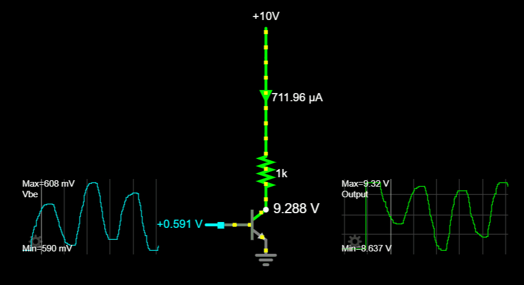Wiggling the voltage at the base (input) causes an amplified & inverted copy at the output. [Falstad]
The example above uses a slider to simulate a changing input, but we don't need to use a slider. Any periodic signal applied to the base will produce a similar output, as long as it has the right DC offset (~ 0.6V) and doesn't stray too far outside this range. (So around ±20mV peak-to-peak.)

A basic common-emitter amplifier. [Falstad]
In this example, the input range spans [590mV, 610mV], or 20mV peak-to-peak (Vpp). The output range covers [8.53V, 9.32V], or 0.79Vpp. If we define the gain of a common-emitter amplifier as a ratio of input to output, then
The minus sign is there because the signal is inverted with respect to the input.
For this amplifier, the gain is , meaning that any input signal will be inverted and scaled up by 39.5x. Try changing the amplitude of the input, and you'll see that — within approximately ±25mVpp — the output's peak-to-peak value will always be ~ 40x larger than the input!
Common Emitter Gain
We have seen the most basic common-emitter amplifier configuration and proven that it amplifies. We'll benefit from learning how this gain is set, first via some experimentation and careful observations. At the end, we'll develop our observations to more precise understanding, which will give us the key to variable-gain amplification.
There are two ways to control gain with the current configuration:
- Change the size of the collector resistor .
- Change the DC offset of the input higher/lower than 0.6V.
Changing Gain Via Collector Resistance
Changing the collector resistor directly affects the gain in a linear manner: if is fixed due to , then the voltage drop will be scaled by Ohm's Law.
Compare when the resistor = 1kΩ, the "shift" at the output caused by ±5mV ranges ~ ±0.2V.
| 0.595 V | 0.824 mA | 1k | 0.82 V | -0.18 V |
| 0.6 V | 1 mA | 1k | 1 V | |
| 0.605 V | 1.214 mA | 1k | 1.21 V | +0.21 V |
Calculating peak-to-peak of the output is possible by subtracting (max - min), so gain is as before.
However, when we change = 4kΩ, the output "shift" for the same input is now between -0.7V and +0.9V:
| -5 mV | 0.824 mA | 4k | 3.3 V | -0.7 V |
| 0.6 V | 1 mA | 4k | 4 V | |
| +5 mV | 1.214 mA | 4k | 4.9 V | +0.9 V |
Gain is , increasing linearly with . (Notice that we made 4x as large, and 160 = 4*40, our original gain.)
In general, , so larger values of will scale the same changes in current to larger variations in .
Changing Gain Via DC Base Offset
Returning to its original value of 1kΩ, let's pursue the other option and oscillate the input about different voltages than 0.6V.
Recall that, with = 0.6V, we get:
| -5 mV | 0.824 mA | 1k | 0.8 V | -0.176 V |
| 0.6 V | 1 mA | 1k | 1 V | |
| +5 mV | 1.214 mA | 1k | 1.2 V | +0.214 V |
As before, = 39.
Because shifting by -18mV cuts BJT current by half, we have:
| 0.577V | 411 uA | 1k | 0.411 V | -0.089 V |
| 0.582V | 500 uA | 1k | 0.5 V | |
| 0.587V | 605 uA | 1k | 0.605 V | +0.105 V |
, about our original gain.
If we increase by +18mV offset, we find:
| 0.613V | 1.65 mA | 1k | 1.65 V | -0.350 V |
| 0.618V | 2 mA | 1k | 2 V | |
| 0.623V | 2.43 mA | 1k | 2.43 V | +0.430 V |
, or 2x the original gain.
This achieves similar results as before, but we only need to shift the input offset by a few millivolts to achieve large gain changes. However, the shift this time is exponential. This means a gain of 4x, similar to setting , is achieved by simply adding another 18mV, to reach 0.636V offset. In the simulation below, .

Increasing the offset by +36mV (see the input scope average = 636mV) causes similar gain as the 4x resistor. [Falstad]
It should be cautioned that these designs (so far) are not ideal to actually implement in a physical design. Without any current limiting, the risks of short-circuiting a transistor are very high. (Not that you can't do it — it may burn or blow up, though. Be ready to kill the power, and don't leave these circuits unattended!)
Our previous approach of installing current-limiting resistors would address some issues, but the interaction changes the transistor behavior by introducing a phenomenon called "degeneration". Despite its advantages (eg. increased linear input range and temperature stability), degeneration adds complexity that isn't essential to build our amplifier. However, it should be considered for future designs once you have a working synth.
Limits to Gain
There is an upper limit on , which we saw when looking at BJTs earlier: if grows too large, the BJT's ability to set current will be overriden by the larger resistance. In the case of these examples, needed to be below 10kΩ. If it approaches this value, any "request" for 1mA of current will be denied; even if we max out to open the BJT "valve" completely, the maximum current flow will be dependent on . (Ohm's Law: .)
Another way to view this "upper limit" to is by considering the voltage drop that results across due to the BJT current. When is too large, then if the BJT pulled the same current, the resistor's voltage drop would be greater than that supplied by the power rails! For the same 1mA current draw, Ohm's Law gives a voltage drop of , and larger resistor values would drop voltage further if current flow were sustained!
In reality, as approaches 10kΩ, the current draw cannot stay at 1mA, but must decrease accordingly. Regardless, dropping large voltages across leaves the BJT collector terminal at a very low voltage relative to other terminals. Recall that "forward active" mode is ensured by keeping the collector voltage higher than base or emitter — we can see that when gets too large, the BJT leaves the forward-active mode to enter "saturation". We do not want this! In addition to being a bad amplifier, saturation causes our BJT intuitions to fail!
We can get into similar trouble by leaving the value of alone and raising the DC offset too much. Because this increases current draw, the resistor drops more and more voltage across itself, the output drops too low, and saturation is reached.
The table below summarizes:
- Output voltage drops for increasing resistor values or base voltage offset .
- With fixed , current remains constant for appropriate resistor sizes.
- An "appropriate" resistor sizing ensures that the BJT can pull its requested current without entering saturation .
| 0.6 V | 1 mA | 1k | 1 V | 9 V |
| 0.6 V | 1 mA | 4k | 4 V | 6 V |
| 0.6 V | 1 mA | 8k ** | 8 V | 2 V *** |
| 0.6 V | 0.62 mA | 16k ** | 9.9 V | 0.044 V |
| 0.7 V ** | 9.97 mA | 1k | 9.97 V | 0.024 V |
** = Causes saturation. (Last three rows.)
*** This voltage output doesn't cause saturation by itself, but with a gain of 500x, an 8kΩ resistor will cause oscillating outputs to attempt to swing far below the base voltage.
In simulation, we can increase the gain to ≈ 300 before hitting saturation. This occurs around ≈ 7.5kΩ ( = 0.6V), or = 0.652V ( = 1kΩ).
Both approaches illustrate an important lesson: we must control and/or appropriately. Too large, and the output voltage swings too low, causing saturation. Too small, and any changes in current caused by oscillations at the base won't translate to noticeable .
Complicating matters, and as noted on the chart above, the output oscillates. This means that all points on the output voltage must be considered — not just the DC offset. If any of the output is below the base voltage, saturation will occur. For example, in the figure below, the constant DC input (0.657 V) to the circuit on the left causes an output voltage of 0.937V — which feels dangerously close to the base voltage, but just avoids saturation. However, with an input of ±5mV and gain ≈ 300, the output will attempt to reach
which is below GND! Open the simulation and hover over the second BJT to see that it switches from "forward active" to "saturation" briefly each cycle. This causes distortion because hitting saturation causes the output to "run out" of voltage to go more negative.
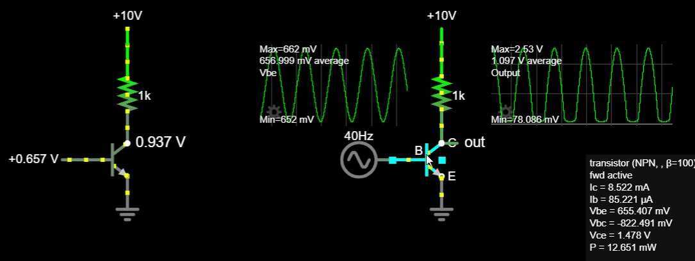This circuit doesn't seem like it should saturate, considering its DC input; however, with an input oscillating about 0.675V and -300x ideal gain, it saturates and distorts. [Falstad]
Note this might be something you want in future designs — audio is a field where distortion can be a good thing! For now, though, we're looking to amplify without altering the sound much, so we will try to avoid saturation.
Finally, the biggest problem these designs suffer from is that the output signal shifts as gain changes. You might have noticed this as you changed the base voltage offset: small gains cause small average voltage drops, with outputs oscillating near the positive rail; large gains cause large average voltage drops, with output oscillating closer to 0V. If we are going to implement variable gain into our amplifier, we need a signal that is predictable and constant. A differential pair (which we are building toward) will give us the tools to create constant-offset output, even with changing gain.
Quantifying Gain With Transconductance
Our first "Theory" warning! This section is optional, but highly encouraged. So far we've been adjusting the gain of the CE amplifier, measuring the output waveform, and comparing to find gain. However, we can develop our theoretical knowledge to solve for gain, uncovering some relationships and equations that will be useful later in our study of differential pairs.
We found previously that increasing the npn BJT's DC offset gave us more gain — approximately twice as much gain for every 18mV increase. This comes from the formula
noting that for = 25mV, the function doubles in value when increases by 0.018. This scales current proportionally.

Current doubles because doubles every time increases by 0.018.
Here's the graph again, but rescaled so that 0.6V maps to 1mA. (Using = 37fA. Again, this is not accurate to physical reality, but it is easier to work with for intuition.)
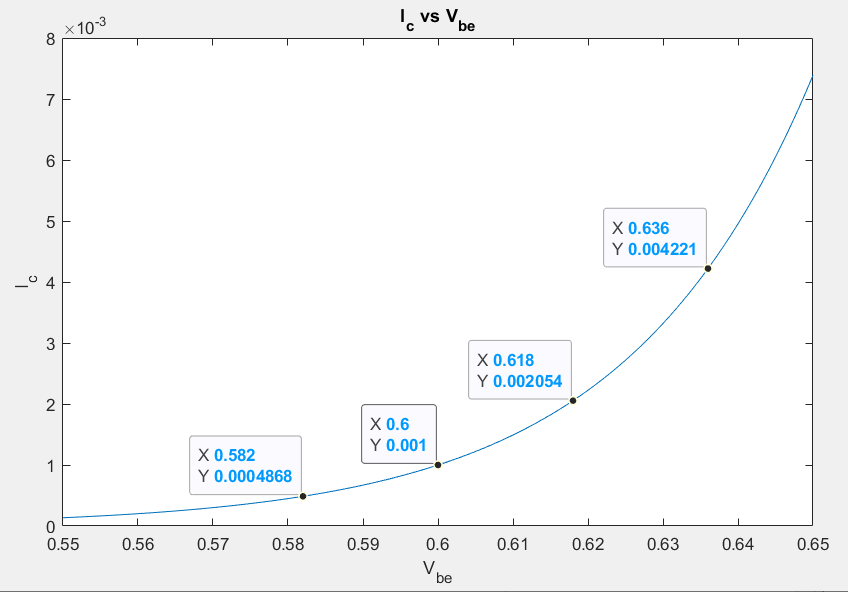Assuming a convenient value of Is scales the plot to clearly show the exponential relationship.
Unfortunately, an exponential is an awkward curve to work with. Depending on where the BJT base-emitter voltage "sits" on this curve, increasing or decreasing by a few millivolts could mean increasing current by a few nano-amps, micro-amps, or milliamps! If the slope were fixed, we could easily predict the output current based on the input voltage, but the slope changes constantly. (This is why we've been adjusting numbers and changing the voltage by non-arbitrary ±18mV increments.)
Luckily, we can use a straight line to approximate the curve about a particular point, called the "operating point". Provided we don't stray too far from the operating point, the straight line gives a reasonable approximation of nearby points on the curve. Notice that the points highlighted on the figure above are ±5mV away from the operating point — beyond this, the error between the curve and straight line gets worse. (This is the reason we've been restricting our amplifier input to a ±5mV range throughout the amplifier build!)

A straight line (the derivative) approximates the current-voltage curve at a particular point.
The slope of the straight-line approximation has units of , or , and is called the transconductance . Its value can be derived without too much difficulty by taking the derivative of the Ebers-Moll equation. The important result relating base-emitter voltage to collector current is:
Given an operating point on the transfer curve — meaning we set the DC offset and know the associated current — we can calculate the conversion factor and use it to find the gain of a common-emitter amplifier.
Naming conventions: AC vs DC
Operating-point values, as well as other constant, DC values, are typically denoted in capital letters: , . When a value "wiggles" with small variations around an operating point, this is denoted using "small-signal" lowercase letters: , . The combination of the two components is denoted by a combination of upper- and lowercase letters:
- (DC + AC)
- (DC + AC)
This also explains why is written in all lowercase letters: it gives the change in current for a given change in voltage about a particular operating point.
However, its value is determined entirely by the DC values of and .
About the name "transconductance"...
The units of the approximation's slope are , or . This looks like Ohm's Law:
\implies R = \frac{V}{I}$$
G stands for conductance, and is defined as the reciprocal of resistance.
It has the same units as the BJT approximation slope, but it's not quite conductance that we're after. In this case, we are interested in transconductance, denoted , which is the conversion factor that will help us calculate how small variations in the input voltage transfer to variations in the output current. The prefix "trans-" means "across", while "conductance" tells you the units of this conversion factor. It is not a literal "conductance," so much as a metaphor for a conversion factor with units similar to .
Using gm To Predict Gain
Assuming again that:
- = 0.6V (operating point)
- = 1mA (operating point)
- = 1kΩ
We want to predict the currents, voltages, and gain at the output once we apply an AC oscillation.

All we know at first glance about this circuit is that it has = 0.6V, = 1mA, = 1kΩ.
We'll also assume that we know the input will be limited to ±5mV. Using the lowercase notation to indicate small-signal variations, we can write this as = ±5mV. (Once we generalize our results, we'll be able to find gain without knowing the input voltage range.)
We can start by realizing that the voltage drop due to the constant DC offset is = (1mA)(1kΩ) = 1V. This gives an output operating voltage of:
The limits of are given by = 0.6V and our assumed input range of ±5mV. However, we don't yet know what current will result from this.
We could find at these voltages using the Ebers-Moll equation, but using to approximate the small-signal change makes this simple:
Therefore, we can calculate by finding the voltage variation caused by , and add this to the constant (op-point) output of 9V:
In other words, we predict seeing a change in voltage ±200mV at the output. This is a gain of , which is close to the value we got earlier from measuring the simulation waveforms.
One final trick we can apply is to notice that the voltage deviates from the op-point by a value determined by the current and resistance. However, for any small-signal input amplitude (±1mV, ±5mV, etc — though the approximation gets worse with larger inputs), the current is approximated by the conversion factor . Therefore, we could write the total gain of the system by noting that:
If we plug in our values, we get = (0.04)(1kΩ) = 40. So we don't even need most of the steps above — once we have , we can find gain by multiplying .
Summary
Transconductance allows us to predict how current will change, given small changes to . This is important because the relationship between BJT current and base-emitter voltage is exponential — but by restricting the range of , we can treat this relationship as linear with constant-slope.
The most important takeaways are these two equations, which allow us to find the transconductance and gain at any operating point.
If we need to calculate any intermediate values such as max/min voltages or currents, we can use:
The Differential Pair
We are now ready to understand the core of the synth amplifier: a differential pair. This looks somewhat different from the common-emitter amplifier from before, but its operation is very similar and we have already developed all the tools we'll need to understand how it works. The added complexity is especially worthwhile because:
- Current through a differential pair is easy to control. Current determines gain (via ), and this is how we will achieve variable gain.
- A differential pair has two outputs which we can use to create a constant-offset output. A basic common-emitter amplifier shifts its output as gain changes, which would be unusable for our purposes.
We'll address both of those advantages soon; first, we need to learn about the differential pair. The image below shows the diff pair with oscilloscope plots for the input and two outputs. You don't need to understand this yet; it's just helpful to know what we're building toward. Notice that the input waveform (left) and the output Out+ (right) look similar, while the output Out- (center) looks inverted. This is important because it gives us two copies of the signal, which is the key allowing us to fix the output voltage drift.
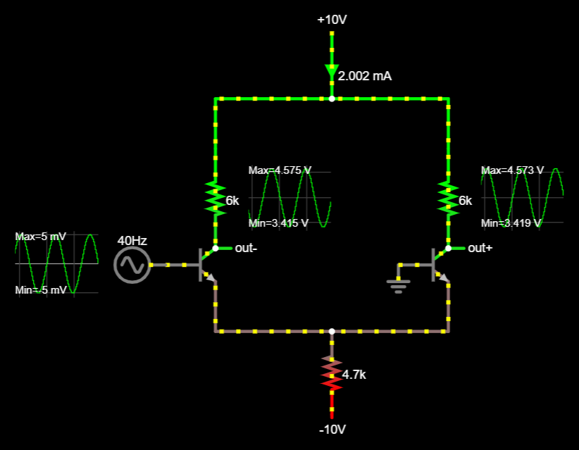Differential pair [Falstad]
The left branch features a common-emitter amplifier with our input signal at the base. We know that common-emitters invert, so this explains the inverted output at out-. However, unlike before, the input signal is not floating about 0.6V, but is instead centered about 0V. This will be explained shortly.
The right branch has a similar common-emitter amplifier — but confusingly, the "input" of the base is connected to GND, and somehow its output shows a copy of the left-branch's input!
Differential pairs can be used in different configurations, but we will be studying a single-input, dual-output configuration because we only have one input signal.
As before, analysis is made simpler by considering the system with constant DC input.
DC Approximations
0V Input
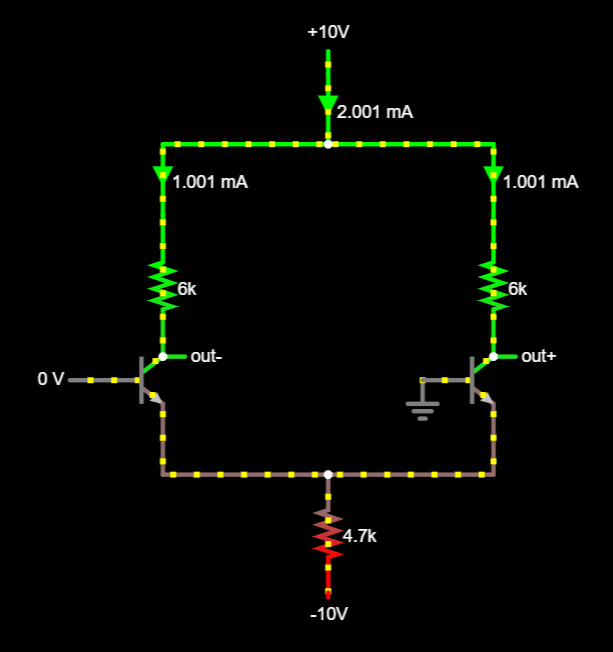Differential pair, DC offset = 0V. [Falstad]
In this view, we set the input to 0V to match GND, so that both BJT branches are symmetric. Because the BJT emitters are connected, this means their are the same, so they ought to conduct the same current. If so, then as the ammeter at the top shows 2mA flowing into the circuit, equal current flow implies that 1mA flows through each branch. In our adjusted BJT model, 1mA current flow occurs during forward-active mode, with = 0.6V — therefore, with the bases at 0V and a drop of 0.6V, the emitters must be at -0.6V. This fact is what allows our input to have a 0V DC offset, instead of the 0.6V offset we had before — the offset has simply been shifted to bring the emitter 0.6V below GND!
The resistor at the bottom of the circuit, , connects the emitters to the -10V rail, and functions as a basic current source. By our assumption that the base-emitter drop sets the emitter around -0.6V, the resistor must have a voltage drop of 9.4V. By Ohm's Law, current can be set by choosing a resistor value; in this case, we want 2mA when connected to -10V, so 4.7kΩ gives ≈ 2mA.
We're not exactly using 4.7... In attempting to get an approximation yielding 1mA, I'm using 4.653kΩ. This is necessary because the base adds some non-negligible current beyond 2mA.
Technically, our analysis began by noticing that the circuit "draws 2mA" as a given. Causally-speaking, the reason the circuit draws 2mA and the base-emitter voltage is 0.6V is because the resistor is sized for 2mA to flow, under the assumption that is 0.6V. There's a lot of "chicken-and-egg" reasoning with transistors, and sometimes the way to solve it is to start with an assumption that the transistor is ON and therefore must be 0.6V.) If this assumption is wrong, you'll eventually stumble upon a mathematical or logical contradiction.
Finally, the collector resistors have been changed to 6kΩ. This is done to increase gain. Each branch current has 1mA, so the resistors drop from the 10V positive rail. This places the output at (10V - 6V) = 4V, which is near but not below the 0V base voltage, keeping the transistors out of saturation.
+5mV Input
In a common-emitter amplifier with op-point = 1mA, we expect that a ±5mV change to the base-emitter voltage causes a current change of ±0.2mA. (Recall that , so = 0.2mA.) When we try this in simulation, though, we only see a 0.1mA increase! This is half the current we expect, indicating we're missing something.
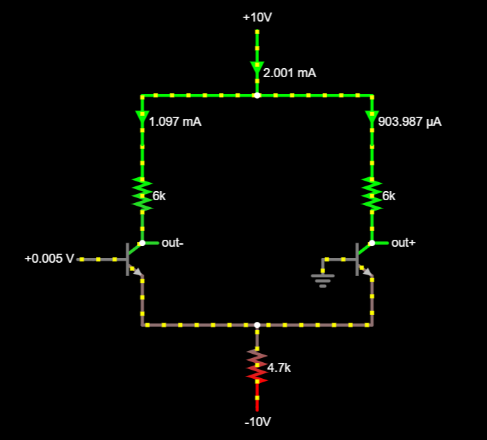The diff pair with 5mV at the input gives a current increase that is half what we expected. [Falstad]
The easy way out is to say, "The interaction of the two amplifiers causes input signal changes to have half the total effect as they would in a single common-emitter amplifier." This is true, but why? Let's start by stating what we do understand. [9]
While the current-setting resistor, , is not ideal, it is good enough to trust the total current draw is still ≈ 2mA. A 0.1mA change in current would require greater than 50mV change in the emitter node voltage, and this seems unlikely. (One of the bases is tied to 0V GND, so this would cause more than two 18mV jumps in — meaning the current would need to change by more than a factor of 4!) Therefore (even if it weren't indicated by the ammeters) we can still safely assume that this circuit is drawing 2mA in total.
If the current through a branch changes, then that branch's base-emitter voltage must have changed also. However, the base voltages are fixed at 5mV and 0V. Therefore, the emitter node must not be at -0.6V any longer. We've found something unexpected — if we think through a few hypothetical scenarios, we can figure out what is happening. We'll use (+) and (-) to refer to the left (inverting, -) or right (non-inverting, +) transistor throughout this analysis.
First, let's assume the node is still at -0.6V. If it were, then the left-branch transistor would have the expected = 605mV, but the right-branch BJT would still be at = 600mV. This is problematic because we know — yet if the circuit's total current is 2mA, we can't possibly have 1.2mA and 1mA through each respective branch! The sketch below illustrates this logic.
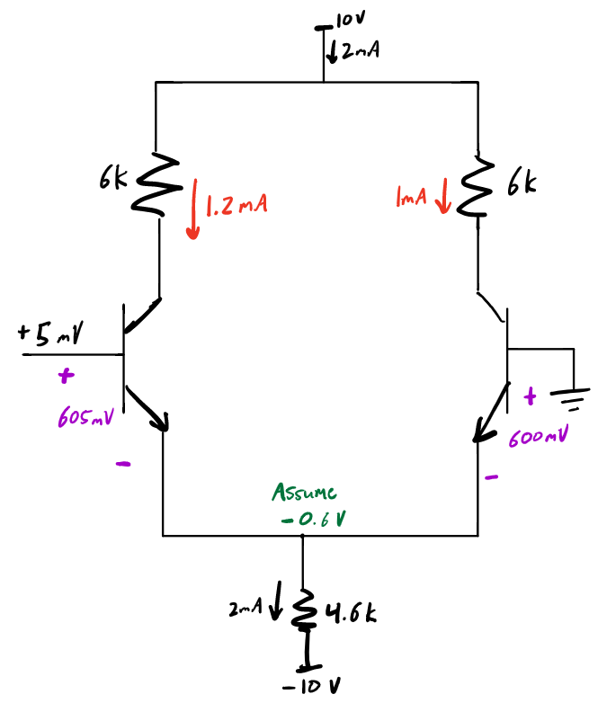If the emitter node stays at -0.6V, then the left branch must conduct 1.2mA while the right continues to conduct 1mA. But we know that the circuit only uses 2mA in total.
Admitting that the emitter node must raise its voltage, we might reason that the base only goes up 5mV — at most, the emitter node would similarly rise 5mV. If we assume this condition, then the emitter node voltage becomes = -595mV. This causes the left-branch = 600mV, meaning it continues to conduct 1mA. However, now the right-branch = 595mV. From , we know that
so of 595mV causes current flow to reduce to 0.8mA. However, this is similarly problematic, because the branches would conduct 1.8mA in total! Therefore, it seems reasonable that the unaccounted-for 0.2mA might be split evenly between the branches — after all, within small base-emitter changes, current variations approximate a constant slope and follow a linear relationship. The figure below shows this scenario and the missing 0.2mA.
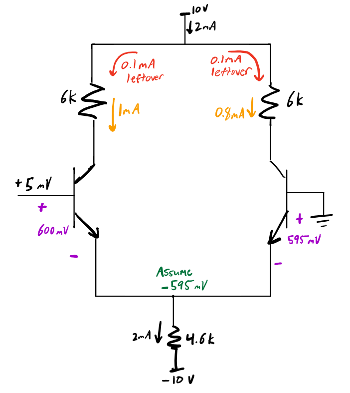If the emitter voltage is -595mV, then the left-branch current is 1mA, but the right-branch current is only 0.8mA. It seems likely that the remaining 0.2mA of current might split evenly between both branches.
Splitting the remaining 0.2mA across both branches brings each branch current to 1.1mA and 0.9mA, respectively. The required to achieve this is halfway between the two extremes we considered at ±2.5mV: on the left branch, = 602.5mV, and on the right, = 597.5mV. This gives an emitter voltage which agrees with both branches: -597.5mV is 602.5mV away from the +5mV input, and 597.5mV away from GND at the other BJT base.

Base-emitter voltages agree at a halfway point between the two extremes, allowing the branch currents to total 2mA.
Input signals in a differential pair, then, "pull" the emitter voltage up to maintain base-emitter voltage; however, this action is opposed by the grounded BJT as it attempts to keep its base-emitter voltage large enough to maintain current flow. The pair fight to establish a which satisfies the current demands on both branches, and (due to linearity) the equilibrium point is halfway in-between.
This updates our equations for the differential amplifier:
Try it out to realize that:
From the simulation, , which agrees with what we predicted!
Simulation results and theory agree. [Falstad]
Adjustable Gain
Gain is dependent on , which is determined by the op-point current . While changes slightly with changing current, it doesn't change much — we can basically rely on being 0.6V while the transistors are conducting in forward-active mode. Therefore, current is entirely set by the resistor and negative voltage rail in the circuit. We've had adjustable gain the whole time!
We could change current by modifying the resistance (eg. via a potentiometer), but to achieve voltage control, we can simply adjust the negative rail of the differential amplifier. "More negative" values will conduct more current across the same resistance, increasing gain in the circuit. As an added benefit, this method of gain control is linear, not exponential, so amplitude changes proportionally with the negative rail.
In the simulation below, moving the slider adjusts the negative rail and changes the gain at the outputs. Note that the output scopes are set at a fixed vertical scale, which makes it easier to see how the signal changes with different bias voltages.
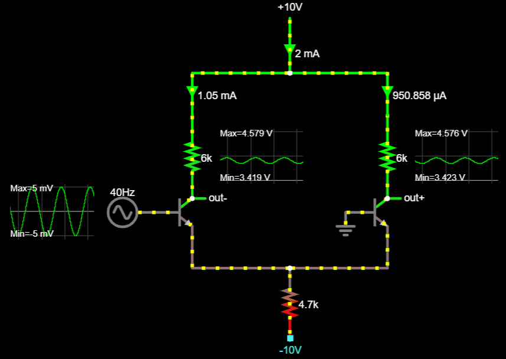Adjusting gain is as easy as changing the negative rail. [Falstad]
To allow the gain rail to be set between [0V, -10V] via CV in the range of [0V, +5V], we can configure an inverting op-amp to re-scale CV with negative gain. As with buffers, an inverting op-amp applies negative feedback, but with two resistors and , following the formula
We can double the CV range by choosing = 10kΩ and feedback resistor = 20kΩ.

Using an inverting op-amp, CV from [0V, 5V] provides the [0V, -10V] negative voltage source we need. [Falstad]
Removing Output Offset
The differential pair provides us with two identical, inverted outputs that have the same DC offset. Conveniently, subtracting these two signals will remove what they have in common, while adding their differences.

Subtracting two signals with the same offset removes the offset and sums the oscillations. [Desmos]
We could pass these two outputs into another differential pair, this time using both "base" inputs to subtract one from the other — but because we don't need adjustable gain, we can use an op-amp. This time, we'll use a configuration called a "differential amplifier," which effectively does what our differential pair does. (In fact, the differential pair that we've been using is a core circuit that op-amps use internally!) The differential amplifier applies negative feedback to subtract two signals according to the formula:

Applying this to the amplifier circuit, we can connect both of the diff pair's outputs to the inputs of the differential amplifier, setting the gain ratio via to apply any additional gain we might need to the signal. The full circuit is shown below.
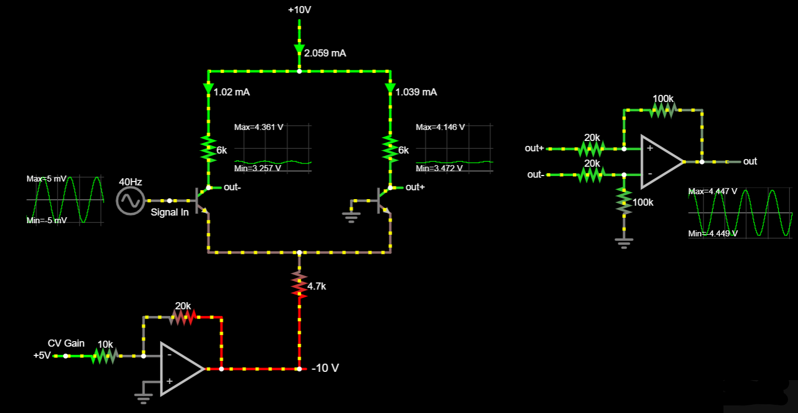An amplifier simulation (using adjusted SPICE model!). The differential amplifier applies 5x gain to the difference of out- and out+. [Falstad]
Remember that we've been using transistors with edited SPICE models for mathematical simplicity. Be sure to use normal SPICE models when choosing values for your amplifier design, or see the build notes below for an implementation.
Amplifier Build Notes
We've been modeling the amplifier with very high currents! The amplifier will work regardless of whether you use milliamps or microamps, so you can use a smaller current by increasing the tail resistor value if you'd like. Yes, you'll lose gain, but remember that the (first stage) differential pair's job is to allow for adjustable gain, which it will do regardless of the particular range. The differential amplifier (second stage) will provide any make-up amplification that we need.
One advantage of making the tail resistor big, as well as using a large sink voltage (eg. -12V instead of -5V), is that it creates a more reliable current source. Large resistances require a larger voltage change to noticeably affect their current (). Think about how changes in millivolts. The larger the sink voltage magnitude, the less a ±1mV change will affect current through the resistor, and subsequently, through the transistors.
One final change you might make to the design during implementation is to replace some of the resistors with adjustable resistors ("trimmers"). There are two reasons to do this.
First, making the op-amp feedback resistor adjustable will allow you to adjust the maximum gain of the amplifier. If your signal is slightly above or below the Vpp level you desire, you can simply turn the trimmer's screw, and adjust the voltage sink range. (Eg. Instead of 0-10V, you might find 0-9.7V works better if your output is slightly too large.) Depending on the speakers you use, you'll likely want to aim for a "full volume" signal of 1Vpp or 5Vpp. Providing more than that will distort, and less means you're missing out on potential volume range. (Try sending a signal from the function generator into the speakers, if you can't find anything in a datasheet. See what sounds good, and when it distorts.)
Secondly, the differential amplifier uses matched components, meaning that each of the two resistors and are pairs. If one is larger than the other, then your output will be amplified unevenly. You can either test multiple resistors to find two that are close enough (this is what I did — it took measuring ~ 10 resistors to find a decent pairing), or else replace one of the two with a trimmer.
2.5 The Envelope Generator
Our oscillator outputs a continuous, variable-frequency tone, but this isn't how most instruments sound. When musicians plays a note, the sound doesn't remain constant, but changes over time: the musician may increase the volume at the beginning, or adjust the volume mid-note; it may start suddenly, or gradually build up; and the musician can end the note abruptly or slowly fade out. Interestingly, the note maintains its pitch throughout this process (if the musician is any good), meaning the frequency is fixed while the amplitude changes.
We've been controlling our amplifier gain via an adjustable power supply providing CV, but we could allow another source to provide the volume level. This is the idea behind amplitude modulation, in which a signal (like our sustained oscillator output) is modulated in amplitude by another signal. If we imagine turning the volume up and down every second while generating a constant 20Hz sine wave, amplitude modulation looks like this:

The modulating 1Hz signal in the figure above is called an envelope because its level constrains the amplitude of the original 20Hz signal within its bounds. If the envelope remains constant at 0V, for example, then the output signal will be 0V, even if the original audio signal oscillates wildly. An envelope generator, then, is simply a circuit which produces an envelope to modulate other circuits. Using an envelope generator to control our synth's amplifier gain will allow us to automatically vary the volume, without manually adjusting a power-supply voltage ourselves. This is the key to creating a more musical sound.
Envelope generators can run continuously, like an oscillator, or they can be triggered by an external signal, called a gate, to play. The envelope continues while the gate has a high voltage (eg. 5V), and ceases its output when the gate goes low (0V). You might imagine a gate corresponding to pressing a key on a piano: the note plays while you hold the key, and fades out or stops when you let go. If no note is pressed, the envelope generator does not output an envelope. Depending on the implementation, envelope generators may repeatedly generate an envelope, or only "fire" once when the gate first triggers. Following most instrument behavior, we will implement a "one-shot," which triggers once per gate.
Envelopes come with different shaping options, but typically allow users to control 4 parameters: attack, decay, sustain, and release, or ADSR. Three of these parameters (attack, decay, release) are time-based, while one (sustain) is amplitude-based, giving the user control over the overall envelope shape.
Attack sets how quickly the amplitude of the envelope reaches its peak. A "fast" (short) attack causes volume to rise abruptly, while a "slow" (long) attack causes a gradual swell.
Decay sets how quickly the amplitude reduces (decays) to a secondary level after it peaks. Fast decay times cause sharp "staccatto" envelopes.
Sustain sets the level that the envelope reduces to, after it hits its initial peak. If sustain is set to 100%, then no amplitude reduction occurs, rendering the decay parameter ineffective. If sustain is set to 0%, then the amplitude is completely reduced. Sustain is typically set to some value in the middle of this range. The envelope maintains the sustain level for the rest of the time that the gate remains high.
Release determines how quickly the envelope signal returns to 0V once the gate is released. Fast releases cause an abrupt end, while slow releases gradually fade out.

ADSR: Attack, Decay, Sustain, and Release. ADR control time, while S controls amplitude. [Source]
A Basic AR Envelope
At its most basic, an attack/release envelope generator should accept CV input which triggers a gate when it goes high (5V). The output signal should rise at a defined rate, hold for the duration of the gate, and fall at a defined rate when the gate returns low.
We've already seen an envelope generator that fulfills these requirements: the low-pass RC filter! [10]
The RC low-pass step response forms a basic AR envelope.
A low-pass filter has the right shape for an envelope generator, although we don't want to connect another circuit's output directly to the filter. As a general rule, we want to isolate our circuits so that they don't affect other circuits which interact with them. While this does sound like the job for an op-amp buffer (recall: high input impedance), there's another problem: what if the previous circuit has output other than 5V, such as a negative voltage, or 4V (or 6V?) instead of 5V? We want to build our circuits such that they are not reliant on other circuits being perfect. Blindly accepting external input is a guaranteed invitation for unexpected input and undesirable circuit behavior.
Recognizing that the gate signal is a logical condition (either it is ON or it is OFF), we can feed the input into a comparator with a fixed reference. Similar to an op-amp, a comparator will have high input impedance, isolating our circuit, but it also guarantees only two possible outputs: HIGH or LOW. This is much easier to design around because it minimizes reliance on external factors — either the input CV is above a certain threshold, or it isn't. The comparator then feeds an RC network to create our first gate-triggered AR envelope generator.
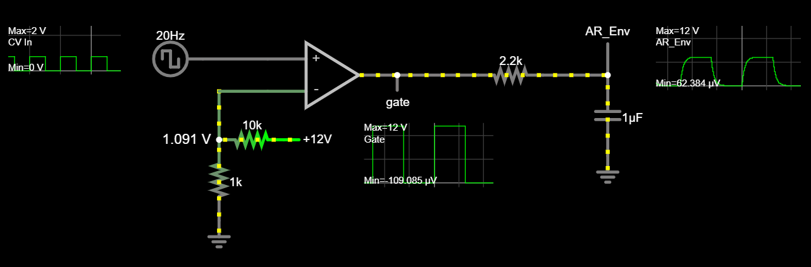The most basic AR envelope generator. [Falstad]
The comparator output (which we can consider the "true" gate signal) swings between [0V, 12V], feeding the RC network with a 12Vpp square wave and resulting in a simple AR envelope. Assigning a slider to the resistor value simulates a potentiometer that allows the attack and release value to be set. (Warning: If you are breadboarding already, be warned that a potentiometer by itself could cause a short-circuit if you lower the value near 0Ω. Put a small (400Ω) resistor in series with the potentiometer to set a "lower limit" on RC resistance.) You can experiment with the potentiometer range: use the oscilloscope output to find a range of attack/release that feels "good" to you.
Scaling Simulation Time
Because we are designing circuitry that operates on a timescale of seconds, you might be tempted to set your simulation's square wave input to a low frequency (eg. 0.2 - 0.5 Hz). While software such as LTSpice can easily accomodate any timescale you use, Falstad has limits on its time resolution. Additionally, even with a powerful computer and running at maximum simulation speed, your browser will likely only simulate fractions of a second in real time. To get around this, we'll work in "scaled" time (0.01x), treating every 1ms of simulation time as 100ms in the real world. Divide all frequencies by 100; multiply all periods by 100; if you want an envelope that takes 2 seconds to rise and 2 seconds to fall, set your time constant so that the attack takes 0.02 seconds, and when you assmble the breadboard, simply multiply your R or C by 100.
Up until now, we've powered our ICs with ±12V, but this is not required. Op-amps and comparators can only output as high or low as their supply rails, so by connecting the comparators to 0V instead of -12V, they will output within that range. (Also, depending on your comparator ICs, a 24V power supply might fry the chips. In 2022, at least, it is easier to find comparators that accept 12V than 24V.) Note that, by default, Falstad uses ±15V as the supply rails for op-amps. This hasn't been an issue before because our components have not used their full output range; however, in this design, our devices will regularly output "rail" voltages. If you want to use your design on ±12V, make sure to design for this by editing the output range of all op-amps you place into the simulation. Double-click on each op-amp, and set the "Max" and "Min" output voltage for the component to match the rails you will use. Do this for every op-amp you place! (Falstad will not do this automatically.)
Also keep in mind that we shouldn't require the input CV to be perfectly 0V or 5V — after all, the incoming circuit output might not reach these values exactly. We can set the reference threshold somewhere in-between, high enough to not trigger accidentally, but low enough that the CV should easily pass it during a gate. Where that threshold is exactly depends on a circuit designer's instincts. As an example, the simulation above assumes a CV input alternating between [0V, 2V], and accomodates this via a threshold just above 1V.
This subsystem is the least rigid in terms of design, meaning it affords you (the designer) with a lot of freedom. We've been designing and implementing lots of complex circuitry, so for this subsystem, you'll have the opportunity to set a lot of the values yourself, according to your intuitions. Of course, you can always go with the values in the schematics here, but engineering is full of trade-offs. If you feel comfortable, experiment to discover what other values you might prefer.
Separating Attack and Release
Although the potentiometer allows us to alter the envelope shape, the effect is applied to both the attack and release. Our problem is that the capacitor charges and discharges through the same resistor. Instead, this circuit can be modified to give different resistances on charge and discharge.
An easy solution is to use two diodes with separate "attack" and "release" potentiometers. Diodes only allow current to flow in the direction they point, so if we use them to create two one-way "lanes", we can route current into separate "charge" and "discharge" paths.
Separate "attack" and "release" via a diode and two potentiometers. [Falstad]
Also note that we added in the 400Ω current-limiting resistor mentioned earlier. We can use other sizes, but be careful to calculate the current and power. These need to be supported by the resistor power ratings and the comparator maximum output current.
Most comparator ICs have ~30mA max current ratings, so this is at the limit of what we can expect from an IC. If you use 1/4W (250mW) resistors, this could be too much for them — although because it's so brief, the resistor is unlikely to heat up too much. We can also use simulation to plot the power over time.
Simulation of a capacitor at 12V discharging across 400Ω.
The LTSpice simulation above uses an initial condition command to set 12V at the "Cap" node on simulation startup. You can find more information on the .ic command in the LT Wiki. (This is from the Help file — open LTSpice and click "Help" to read the documentation! It's dry, but useful.)
To make this a usable envelope generator, we just need to add a buffer at the output, ensuring that the next circuit receiving the envelope doesn't mess up the circuit.
A usable AR envelope generator. [Falstad]
Decay And Sustain
Adding decay and sustain is a challenge, and — full disclosure — we're not going to get a perfect ADSR circuit. While precise ADSR can be built, there's a much easier way to get a very usable ADSR by simply building on to this.
Let's think about what we already have: our attack takes us from 0V to the peak (12V), where it holds that value until the gate ends and the release takes over. What's missing is a "drop" (decay) from 12V to some intermediate voltage (sustain). Instead of trying to modify the AR envelope, let's consider what additional waveform, added to the AR, would give us an ADSR shape.
What does the decay look like?
The decay looks somewhat like another RC time constant! If we had another "Decay/Sustain" envelope which "fired" after our first AR neared its peak, we could subtract that from the original to get an "ADSR" shape.
Triggering a second AR envelope when the first reaches 11V would provide the same (inverted) shape as the decay/sustain of an ADSR.
This is our goal. Consider what we'll need to build this:
- A way to indicate when the AR envelope nears its peak
- A second (DS) envelope
- A way to subtract [AR envelope]-[DS envelope]
Detecting when the AR envelope reaches its peak sounds like a job for a comparator, which can go "high" to indicate when the AR envelope is above a certain level. (We'll call this indication a "Flag".) One solution we might try is to add a comparator with a threshold trigger near 12V. Note that we don't want to set it at 12V, because the AR might not ever get there — if the AR only hits 11.999V, this won't be enough to trigger the comparator. To be safe, we could set our trigger to raise a "flag" when the AR reaches 11 or 11.5V. The figure below shows what this looks like with a reference voltage of ~ 11V. (We're cutting off parts of the schematic, but they are unchanged from before.)

We can superimpose the AR output on the new AR Flag output to verify that it properly indicates when the AR is fully charged. [Falstad]
Connecting the Flag output to another RC network produces a DS envelope. If we make this resistor adjustable (via a potentiometer + current-limiting resistor!), our decay time is now user-controllable.
A DS envelope. [Falstad]
We could also add a variable resistive divider at the output, allowing the DS envelope to scale between 0V and 12V peak, but we'll soon discover another way to implement scaling.
Waveform Scaling and Subtraction
We know how to add waveforms using a 2-input passive mixer. This implies that we could also subtract two inputs, provided we can invert one of them first. Luckily, this is easily accomplished via the inverting op-amp configuration that we've seen before. Notice in the figure below that we now have signal entering the inverting (-) terminal!
Recall that, for any input , an inverting op-amp has theoretical gain
If we size , then the gain is simply and we get an inverted copy of the waveform at the op-amp output. Additionally, if we make the feedback resistance variable (using a potentiometer + current-limiting resistor), we can vary gain to any value between 0% and 100% (inverting). Notice that the resistor values don't, by themselves, affect gain — only their ratio. Therefore, we'll size them to ensure low current even when the gain is low.
Low gain implies is small relative to . The current-limiting resistor in the feedback path sets a lower-limit for , so we'll need to be large in comparison. Setting both resistances ~ 100kΩ, then, will allow for a lower gain limit of = 0.01, which is close enough to 0.
Adding this into our envelope generator has a catch: whereas in the past, we've seen that op-amps have no effect on their input circuits (via high input impedance), we'll need a separate buffer on the DS signal before the inverting op-amp configuration! While the op-amp itself has high input impedance and negligible current entering its input terminals, the inverting configuration's resistors provide an alternative path for current to flow. Without a buffer before the inverting circuit, these resistors would alter the RC network's operation. (Non-inverting op-amp configurations, including the buffers we've used, don't have this problem.) Therefore, we'll buffer first, then invert.
Buffering the DS signal, then inverting it via an inverting op-amp. [Falstad]
Now we just need to mix (add) the signals together, which we've done before (in the Oscillator) using a modified voltage divider! We can simplify the schematic by using node names to reference our signals from earlier; the resulting output resembles an ADSR!
ADSR-ish output, with some problems that we'll fix. [Falstad]
Our output looks close to an ADSR, but it has two noticeable problems that we'll fix:
- The ADSR envelope ranges [0V, 6V] max, not [0V, 12V].
- What's that weird "spike" at the end?
Fixing the Range
Recall that the passive mixer gives a weighted average of inputs, or with both resistors equal, . Because our inputs are symmetric about 0V and the inverted signal peaks at 0V, this causes the output maximum to be = 6V.
To fix this, we can make a quick modification on the following buffer which turns it into a non-inverting amplifier.
Non-inverting op-amp configuration.
The non-inverting op-amp has gain
In fact, the op-amp buffer we've been building throughout this project is actually a specific implementation of a non-inverting op-amp configuration: If we let and , then the gain becomes and the resulting schematic is electrically equivalent to a buffer. (Replace with a wire (short), and disconnect (open) entirely.) In this case, we want a gain of 2, so we'll make twice the size of .
Note: You could also size to get gain slightly larger than 2. Because the trigger for the Attack Flag is at 11V, our waveform only gets 11V peak, not 12V. Scaling would make up for this. However, when sustain is set to output at 100% (low resistance, doesn't cut original AR), this effect disappears and you would then be above 12V. This can be mitigated via intelligent sizing of the current-limiting resistor that is in series with the Sustain potentiometer; but is beyond the scope for this build guide. It's a good future improvement to implement, though!
Doubling the scale of the ADSR. [Falstad]
Fixing the ADSR Tail
The "jump" at the tail end of the ADSR output is not easy to diagnose, but it occurs because of the way we implemented our Attack Flag. Think about what happens to the flag signal at the end of a "gate". Because the comparator only does a single comparison ("Is AR higher than 11V?"), its output drops almost immediately when the gate is released. To see why this is problematic, consider that our Decay and Sustain levels occur by subtracting a second signal from the first. What happens to the resulting ADSR signal when the subtracted DS is suddenly removed? It returns to the AR's envelope level.
The ADSR "spike" is caused by DS returning to 0V, removing the "subtraction" from the ADSR output.
Compare this to the original ADSR that we wanted, and it's clear that we want the DS to continue holding until the AR envelope returns to zero.
The original ADSR we proposed.
In other words, we need the comparator to go "HIGH" when the AR envelope reaches 11V, and go "LOW" only when it returns to ~ 0V. We've done this before, as well, with a hysteretic comparator! In this case, we'll want to set the window as wide as possible, while still ensuring the AR waveform will pass the trigger thresholds. Recall the formulas for the hysteretic comparator are:
Alternatively, you can experiment with values and use intuition to guide you: Think of the comparator's voltage divider (between output and input) as favoring the output or input more, depending on the ratio of the two resistors. Larger values of prevent the comparator output from moving the divider midpoint as much, giving more weight to the input signal — this means the input signal doesn't need to move as far to "trip" the comparator. Smaller values of mean the comparator output has more "pull" on the midpoint versus the input signal, requiring the input signal to move farther to "trip" the comparator.
Of course, at minimum, or else the comparator won't trip. To see why, consider when the output is 0V. With equal resistances, the input needs to hit 12V for the midpoint (at the comparator input) to hit 6V. But if , then even at 12V input, the midpoint will never cross 6V.
Changing the comparator to a hysteretic comparator. R={10k, 12k} gives trip points ~ {1V, 11V}. [Falstad]
More future work opportunities: The hysteretic window can be shifted vertically, to be symmetric about some value other than 6V. You might choose to bias toward lower "LOW" thresholds, or higher "HIGH" thresholds as an improvement to the ADSR envelope.
This creates a new, albeit better, problem: the output of the ADSR now swings negative. Ending the DS "subtraction" early caused a "spike", but leaving it for too long causes a "dip" below 0V. The original image showing the output was "clipped" at 0V, but zooming out shows that the output does, in fact, go negative. The simulation from above shows this flaw, too.
The ADSR has a negative "dip" if DS stays on.
To fix this, we simply need to ensure that the output is never allowed to be "pulled" below 0V. This can be easily ensured via a diode, as shown below.
Fixing the "dip" with a diode. [Falstad]
Because a diode only allows current flow across a one-way voltage difference, it will allow the (buffered) output voltage to appear across the 10kΩ output resistor; however, when the voltage goes negative, the diode doesn't allow current, and any remaining charge at the ADSR output drains across the resistor to GND.
Improving DS Decay
There is one final problem with the ADSR, which is difficult to notice because it only happens in specific circumstances. Consider: What if...
- the decay time is long (relative to release time)
- the gate drops low
- and almost immediately, the gate rises again to trigger a new note?
In other words, what if someone tries to play a second note, shortly after the first? We can simulate this by setting the input CV to a large duty cycle, meaning that it stays high for longer than it is short. (Eg. Duty cycle of 95% means the signal is "HIGH" for 95% of the total period.) With a short gap between notes, the DS capacitor won't have enough time to discharge. This has consequences for the "downstream" circuitry — because it is being subtracted, if the DS doesn't return to 0V, then the ADSR output will never reach the 11 or 12V peak that it's supposed to initially hit.
DS doesn't have enough time to reset to 0V if there is only a brief gap between notes. In this example, DS reaches a minimum value of 2.37V before triggering again.
In truth, this doesn't need to be addressed. The synth will work well and sound good without fixing it, and it might even be a unique, charming quirk of the design — a synth that gets quieter if notes are played in rapid succession. However, here is a way we could address it.
If we had an indicator for when a note was finished playing, we could use that to tell something else to rapidly discharge the DS capacitor. This indicator can be constructed by the logical opposite of the Attack Flag. (We might want to think of it as an "AR" or "note" flag at this point, given how it's now being used to indicate when the AR envelope is "playing" a note versus silent.) Logical negation can be done with BJTs, but an easy way is to simply wire a comparator with the inputs flipped: when the input is high, the output is low, and vice-versa.
With an "output-high" indicator for "AR envelope has returned low", we can pass this to a single npn BJT, creating a path for all the charge to leave the capacitor rapidly when the AR finishes discharging. A resistor at the base limits base current enough to ensure that, with 12V applied, the BJT will "open the valve" almost entirely without shorting, allowing almost unlimited current from the capacitor to GND. We'll put a small (10Ω) resistor to prevent the capacitor from discharging too quickly, which could cause it to explode or wear down quickly. Regardless, charge will drain (nearly) immediately, and means that — even with a very short gap between notes — the capacitor will always have time to discharge when the AR envelope drops.
With a single comparator and BJT, we've ensured the DS envelope will always reset between notes. [Falstad]
Build Notes
Many op-amps (even those that claim to be "rail to rail") will not provide output that goes all the way to the voltage rails of your system! Sometimes, the comparator won't, either. However, using the parts listed in the BOM, the comparators will get to 12V, while the op-amps will not (~10.7V).
You can try to get around this by finding an op-amp that will get to the positive rail. At the time of this project's conception, though, ICs are difficult to find. If, for whatever reason, you are unable to find a rail-to-rail op-amp, or simply don't want to, there is an easy solution: don't make your output 12V!
If we set up a separate supply at 10V and connect only our comparators to run on this, then their maximum output will be 10V and the op-amp will be able to buffer the signals properly. Of course, in implementation, you wouldn't want to use a separate supply just for your comparators. This is beyond the scope of this guide, but if you wanted to put this on a PCB, I would recommend using voltage regulators to set a 10V power rail. Connect your comparators to this, and you'll be set.
Also, the comparators cannot be powered by ±12V even if you wanted to. Most that I could find used ~ 18V maximum, and 24V will fry them immediately. The op-amps, however, can use ±12V, so that's safe to do — in fact, you especially do not want to connect the negative power terminal of your op-amps to GND, because if they are supposed to buffer a signal which goes "low", they might not be able to pull it completely to 0V if this is also the supply rail. Using -12V as the supply rail ensures that the op-amp can fully output to true 0V.
Finally, similar to the amplifier, the resistors used throughout this subsystem need to be precisely set. For example, the inverting op-amp could amplify, instead of attenuate, if . If you have to use unmatched components, you'll want to ensure that you place the larger one as . In general, if you're not using perfectly-matched resistors, consider on which side of the "error" spectrum you want your results to be.
2.6 System Integration
Once every subsystem is built, you're ready to connect! Start with the oscillator, and chain inputs and outputs until you reach the speaker output buffer. Check for known inputs and outputs of various subcircuits as you go. If something doesn't work, trace back to the last "known" test point and you should be able to diagnose any issues.
Give every breadboard a solid power supply connection, or else the individual subsystems might not all receive exactly the same rail voltages. Similarly, connect each breadboard GND rail, and provide multiple paths from breadboard GND rails to the supplies to ensure that a reliable 0V is maintained across all breadboards.
It's a scary process, but you should be able to get a full synthesizer system working pretty quickly! Here's a YouTube video showing the system, and what yours might look and sound like. Good luck!
3.0 Future Work
Under Construction
Still need to add all of this. The document is littered with "future work" suggestions, so I need to Ctrl+F and add those in here.
Additional Modules
Low frequency oscillators (LFOs), white noise generators, ring modulators, and glides (portamento). LFOs are used to modulate the control voltages to the other modules (VCO, VCF, and VCA) to provide tremolo or vibrato effects. White noise generators can be used as additional signal source, usually mixed with the output of the VCO to add the whoosh of a wind instrument or the the crash of a cymbal or drum. Ring modulators are basically analog multipliers that create very weird effects, but are important for synthesizing things like bell sounds. Glides are used on the inputs of VCOs to provide trombone-like slides from note to note.
References & Notes
Sourced from Michael Erberich's AES Microcontroller Workshop ↩︎
For a more detailed exploration of series and parallel circuits, check out this tutorial. ↩︎
Perfect Circuit Eurorack gives some introduction to Eurorack. ↩︎
I think this analogy is developed by Moritz in one of his videos, and it's probably where I first saw it. I didn't see it anywhere when I scanned his VCF series, but it's got to be somewhere around there. ↩︎
See Peter Cheung's excellent Aero notes on BJTs ↩︎
From Professor Prodanov's EE308 lecture notes, Lec. 2. ↩︎
He's certainly not the first person to use this technique, but I got this idea from Moritz Klein's video on temperature compensation ↩︎
Check out this video by the AudioPhool called Differential Amplifiers Made Easy ↩︎
The core of the AR envelope generator is derived from Moritz Klein in his "ADSR-ish" video. However, the design departs from Moritz's implementation after that. ↩︎